<meta charset="utf-8">
<title>Admin Kit Mockups</title>
<meta name="claude:viewport-fit-sides" content="cover">
<meta name="description" content="Mockups that bring the dame.is admin's nav, front desk, workbench and studios onto the site's kit.">
<link rel="stylesheet" href="https://fonts.googleapis.com/css2?family=Crimson+Pro:ital,wght@0,300..900;1,300..900&family=IBM+Plex+Mono:wght@400;500&display=swap">
<style>
/* ===================================================================
   Layout: one reading column of concept sections, as in
   docs/design-audit/index.html; wide mockup frames scroll inside their
   own box at narrow widths. The doc borrows the site's 1 pm sky in
   light mode and its midnight in dark. The frames carry the real sky
   tokens for the hour they name, whatever the doc's own theme.
   =================================================================== */
:root {
  --d-bg: #f3fbfc;
  --d-bg-2: #e3f5f8;
  --d-fg: #142022;
  --d-fg-2: #33474a;
  --d-fg-3: #4c6a6e;
  --d-rule: #b5dde2;
  --d-rule-2: #d6eef1;
  --d-accent: #0d6a7d;
  --d-mark: #b8461a;
  --d-serif: 'Crimson Pro', 'Source Serif 4', 'Iowan Old Style', Georgia, serif;
  --d-mono: 'IBM Plex Mono', ui-monospace, SFMono-Regular, Menlo, monospace;
}
@media (prefers-color-scheme: dark) {
  :root:not([data-theme="light"]) {
    --d-bg: #161818; --d-bg-2: #1e2121; --d-fg: #e2e9e9; --d-fg-2: #c3cfcf; --d-fg-3: #98abab;
    --d-rule: #364040; --d-rule-2: #282d2d; --d-accent: #9cc9c9; --d-mark: #f08a5d; color-scheme: dark;
  }
}
:root[data-theme="dark"] {
  --d-bg: #161818; --d-bg-2: #1e2121; --d-fg: #e2e9e9; --d-fg-2: #c3cfcf; --d-fg-3: #98abab;
  --d-rule: #364040; --d-rule-2: #282d2d; --d-accent: #9cc9c9; --d-mark: #f08a5d; color-scheme: dark;
}

body { margin: 0; background: var(--d-bg); color: var(--d-fg); font-family: var(--d-serif); font-size: 18px; line-height: 1.55; }
.doc { max-width: 76rem; margin: 0 auto; padding-left: max(16px, env(safe-area-inset-left, 0px));
       padding-right: max(16px, env(safe-area-inset-right, 0px)); padding-block: 48px 120px; }
:where(.doc) a:not(:where(.frame a)) { color: var(--d-accent); text-underline-offset: 3px; text-decoration-thickness: 1px; }
.doc :focus-visible { outline: 2px solid var(--d-accent); outline-offset: 2px; }
.doc code { font: 0.8em var(--d-mono); overflow-wrap: anywhere; }

/* ---------- Masthead ---------------------------------------------- */
.mast { display: grid; gap: 18px; padding-block: 24px 40px; max-width: 54rem; }
.mast-eyebrow { margin: 0; font-variant: all-small-caps; letter-spacing: 0.14em; color: var(--d-accent); font-size: 17px; }
.mast h1 { margin: 0; font-size: clamp(38px, 6.4vw, 70px); line-height: 1.03; font-weight: 600; letter-spacing: -0.015em; text-wrap: balance; }
.mast-lede { margin: 0; font-size: clamp(19px, 2.2vw, 22px); color: var(--d-fg-2); max-width: 46rem; text-wrap: pretty; }
.mast-how { margin: 0; font-size: 16px; color: var(--d-fg-3); max-width: 46rem; }
.tally { display: flex; flex-wrap: wrap; border-top: 1px solid var(--d-rule); border-bottom: 1px solid var(--d-rule); margin: 0; padding: 0; list-style: none; }
.tally li { padding: 10px 22px 12px 0; margin-right: 22px; border-right: 1px solid var(--d-rule-2); display: grid; gap: 2px; max-width: 15rem; }
.tally li:last-child { border-right: 0; }
.tally b { font-size: 30px; font-weight: 600; font-variant-numeric: tabular-nums lining-nums; line-height: 1.1; }
.tally span { font-size: 15px; color: var(--d-fg-3); line-height: 1.35; }

.block { padding-block: 40px; border-top: 1px solid var(--d-rule); display: grid; gap: 18px; min-width: 0; }
.block h2 { margin: 0; font-size: clamp(26px, 3.4vw, 34px); line-height: 1.15; font-weight: 600; text-wrap: balance; }
.block > p { margin: 0; max-width: 46rem; color: var(--d-fg-2); }
.keep { margin: 0; padding: 0; list-style: none; display: grid; grid-template-columns: repeat(auto-fit, minmax(min(100%, 22rem), 1fr)); gap: 12px 32px; }
.keep li { font-size: 16.5px; color: var(--d-fg-2); padding-left: 18px; position: relative; }
.keep li::before { content: '❧'; position: absolute; left: 0; top: 0; color: var(--d-accent); font-size: 14px; }
.keep strong { color: var(--d-fg); }
.ix { margin: 0; padding: 0; list-style: none; display: grid; grid-template-columns: repeat(auto-fill, minmax(min(100%, 17rem), 1fr)); gap: 0 28px; }
.ix a { display: grid; grid-template-columns: 3rem 1fr; gap: 0 10px; padding: 10px 0; border-bottom: 1px solid var(--d-rule-2); text-decoration: none; color: var(--d-fg); }
.ix a:hover .ix-t { text-decoration: underline; text-decoration-color: var(--d-accent); text-underline-offset: 3px; }
.ix-id { grid-row: span 2; font: 500 13px/1.9 var(--d-mono); color: var(--d-fg-3); }
.ix-eb { font-variant: all-small-caps; letter-spacing: 0.1em; color: var(--d-accent); font-size: 14px; line-height: 1.3; }
.ix-t { font-size: 17.5px; line-height: 1.3; }

/* ---------- Concept section --------------------------------------- */
.concept { padding-block: 56px; border-top: 1px solid var(--d-rule); display: grid; gap: 28px; min-width: 0; }
.concept-head { display: grid; gap: 10px; max-width: 48rem; }
.concept-eyebrow { margin: 0; font-variant: all-small-caps; letter-spacing: 0.12em; color: var(--d-accent); font-size: 17px; }
.concept-title { margin: 0; font-size: clamp(28px, 4vw, 40px); line-height: 1.12; font-weight: 600; letter-spacing: -0.01em; text-wrap: balance; }
.concept-lede { margin: 0; font-size: 20px; color: var(--d-fg-2); max-width: 46rem; text-wrap: pretty; }
.concept-label { margin: 0 0 10px; font-variant: all-small-caps; letter-spacing: 0.12em; color: var(--d-fg-3); font-size: 16px; }
.concept-before, .concept-after { min-width: 0; }
.shots { display: flex; flex-wrap: wrap; gap: 16px; align-items: flex-start; }
.shot { margin: 0; display: grid; gap: 6px; max-width: 100%; min-width: 0; }
.shot img { display: block; max-width: 100%; height: auto; border: 1px solid var(--d-rule); }
.shot figcaption, .frame-caption { font-size: 15px; color: var(--d-fg-3); max-width: 44rem; }
.frame-caption { margin: 10px 0 0; }
.shot figcaption strong, .frame-caption strong { color: var(--d-fg); font-weight: 600; }
.concept-notes { margin: 0; padding: 0; list-style: none; display: grid; grid-template-columns: repeat(auto-fit, minmax(min(100%, 21rem), 1fr)); gap: 14px 28px; }
.concept-notes li { font-size: 16px; color: var(--d-fg-2); min-width: 0; }
.concept-notes li strong { color: var(--d-fg); font-weight: 600; }
.concept-tradeoff { border-left: 1px solid var(--d-rule); padding-left: 18px; font-size: 16px; color: var(--d-fg-2); max-width: 46rem; margin: 0; }
.concept-tradeoff strong { color: var(--d-fg); }
.concept-build { font-size: 15px; color: var(--d-fg-2); background: var(--d-bg-2); border: 1px solid var(--d-rule-2); padding: 14px 18px; min-width: 0; }
.concept-build h3 { margin: 0 0 6px; font-size: 15px; font-variant: all-small-caps; letter-spacing: 0.1em; color: var(--d-fg-3); font-weight: 600; }
.concept-build ul { margin: 0; padding-left: 1.1em; display: grid; gap: 4px; }
.concept-build code { font: 13px var(--d-mono); overflow-wrap: anywhere; }

/* Tables in the doc's own voice. */
.tw { overflow-x: auto; max-width: 100%; }
.dt { border-collapse: collapse; width: 100%; min-width: 46rem; font-size: 15.5px; }
.dt th, .dt td { border-top: 1px solid var(--d-rule-2); padding: 9px 14px 9px 0; vertical-align: top; text-align: left; }
.dt thead th { font-variant: all-small-caps; letter-spacing: 0.1em; color: var(--d-fg-3); font-weight: 600; border-top: 0; border-bottom: 1px solid var(--d-rule); }
.dt td code, .dt th code { font: 12.5px/1.6 var(--d-mono); }
.dt .eff { font-variant-numeric: tabular-nums; color: var(--d-fg-3); white-space: nowrap; }
.qs { margin: 0; padding-left: 1.2em; display: grid; gap: 10px; max-width: 48rem; color: var(--d-fg-2); font-size: 17px; }
.qs strong { color: var(--d-fg); }

@media (max-width: 640px) {
  body { font-size: 17px; }
  .concept { padding-block: 40px; }
  .concept-lede { font-size: 18px; }
}
@media (prefers-reduced-motion: reduce) { * { animation: none !important; transition: none !important; } }

/* ---------- The two hours ----------------------------------------- */
/* Read off the harness with ?hour=13 and ?hour=19 (skyTheme.js, after the
   contrast floor). --raised-* are the re-tuned muted and faint inks the
   chrome uses on --surface-raised (theme.css). */
.sky-13 { --page: #f0fcfe; --page-edge: #d3f6fc; --surface-raised: #a3edf9; --surface-deep: #d3f6fc;
  --ink: #131e20; --ink-soft: #2e3f42; --ink-muted: #31666a; --ink-faint: #34777c; --rule: #82d5dd; --rule-soft: #b1eaee;
  --accent: #0d697c; --accent-soft: #35c4ca; --tan: #1eb1b8; --danger: #a23d33;
  --raised-muted: #295153; --raised-faint: #336d70; color-scheme: light; }
.sky-19 { --page: #41358d; --page-edge: #3e3286; --surface-raised: #362c76; --surface-deep: #2f2666;
  --ink: #e0dfe7; --ink-soft: #c2c1cd; --ink-muted: #ccbdce; --ink-faint: #c0a9c4; --rule: #6f51ae; --rule-soft: #674c95;
  --accent: #dd99d3; --accent-soft: #b96eae; --tan: #cc66bd; --danger: #e49d97;
  --raised-muted: #beaac0; --raised-faint: #b298b6; color-scheme: dark; }
.sky-13, .sky-19 {
  --wash-hover: color-mix(in srgb, var(--accent) 8%, var(--page));
  --wash-selected: color-mix(in srgb, var(--accent) 16%, var(--page));
  --accent-fill: color-mix(in srgb, var(--accent) 85%, var(--ink));
  --accent-fill-edge: color-mix(in srgb, var(--accent) 72%, var(--ink));
  background: var(--page); color: var(--ink);
}

/* ---------- Frames ------------------------------------------------ */
.frame {
  --serif: 'Crimson Pro', 'Source Serif 4', 'Iowan Old Style', Georgia, serif;
  --code: 'IBM Plex Mono', ui-monospace, SFMono-Regular, Menlo, monospace;
  position: relative;
  box-sizing: border-box;
  font-family: var(--serif);
  font-size: 16px;
  line-height: 1.5;
  color: var(--ink);
  background: var(--page);
  border: 1px solid color-mix(in srgb, var(--ink) 22%, transparent);
  overflow: hidden;
  text-align: left;
  flex: none;
}
:where(.frame) *, :where(.frame) *::before, :where(.frame) *::after { box-sizing: border-box; }
:where(.frame) :where(p, h1, h2, h3, h4, ul, ol, dl, dd, figure) { margin: 0; }
:where(.frame) :where(ul, ol) { padding: 0; list-style: none; }
:where(.frame) :where(a) { color: inherit; text-decoration: none; }
:where(.frame) :where(img) { display: block; max-width: none; }
:where(.frame) :where(button) { font: inherit; color: inherit; background: none; border: 0; padding: 0; cursor: pointer; }
.frame--desk { width: 1200px; height: 740px; }
.frame--phone { width: 390px; height: 844px; }
.frame--crop { display: inline-block; }
.frame-scroll { overflow-x: auto; overflow-y: hidden; max-width: 100%; padding-bottom: 6px; }
.frame-row { display: flex; gap: 32px; align-items: flex-start; width: max-content; }
.zoom-75 { zoom: 0.75; }

.i { width: 1em; height: 1em; display: inline-block; vertical-align: -0.14em; flex: none;
     fill: none; stroke: currentColor; stroke-width: 1.5; stroke-linecap: round; stroke-linejoin: round; }

/* Numbered pins, drawn on frames. */
.pin { position: absolute; z-index: 5; width: 22px; height: 22px; display: grid; place-items: center;
       background: #e2541f; color: #fff; font: 600 12px/1 'IBM Plex Mono', monospace;
       border: 2px solid #fff; box-shadow: 0 0 0 1px #e2541f; }
.pin--static { position: static; display: inline-grid; vertical-align: -5px; margin-right: 6px; }

/* ---------- The kit, as controls.css and typography.css draw it ---- */
.k-btn { display: inline-flex; align-items: center; justify-content: center; gap: 0.4em; min-height: 36px;
  padding: 0.3em 0.875rem; font: 500 14px/1.2 var(--serif); letter-spacing: 0.02em; color: var(--ink-soft);
  background: transparent; border: 1px solid var(--rule); white-space: nowrap; }
.k-btn--primary { color: var(--page); background: var(--accent-fill); border-color: var(--accent-fill-edge); }
.k-btn--text { min-height: 0; padding: 0.3em 0; font-weight: 400; border: 0; background: none;
  text-decoration: underline; text-decoration-color: var(--rule); text-decoration-thickness: 1px; text-underline-offset: 3px; }
.k-btn--sm { min-height: 28px; padding: 0.2em 0.625rem; font-size: 13px; }
.k-btn--sm.k-btn--text { min-height: 0; padding-inline: 0; }
.k-btn--icon { width: 36px; padding: 0; }
.k-btn--sm.k-btn--icon { width: 28px; padding: 0; }
/* Proposed: the destructive tier. Quiet, never filled. */
.k-btn--danger { color: var(--danger); border-color: color-mix(in srgb, var(--danger) 55%, var(--rule)); }
.k-btn--text.k-btn--danger { text-decoration-color: color-mix(in srgb, var(--danger) 45%, var(--rule)); }
.k-btn.is-off { color: var(--ink-muted); background: transparent; border: 1px dashed var(--rule); }
.k-on, .k-btn.k-on, .k-seg-key.k-on { color: var(--ink); background: var(--wash-selected); border-color: var(--accent); }
.k-btn.is-hover { color: var(--ink); background: var(--wash-hover); border-color: var(--accent-soft); }

.k-seg { display: inline-flex; flex-wrap: wrap; }
.k-seg-key { position: relative; display: inline-flex; align-items: center; gap: 0.35em; min-height: 28px; padding: 0.2em 0.75rem;
  font: 400 13px/1.2 var(--serif); letter-spacing: 0.02em; font-variant-numeric: tabular-nums; color: var(--ink-muted);
  border: 1px solid var(--rule); white-space: nowrap; }
.k-seg-key + .k-seg-key { margin-left: -1px; }
.k-seg-key.k-on { z-index: 1; }
.k-seg-key .n { color: var(--ink-faint); }
.k-seg-key.k-on .n { color: var(--ink-muted); }

.k-eyebrow { font-variant: all-small-caps; letter-spacing: 0.1em; font-size: 12px; color: var(--ink-muted); font-weight: 400; }

.k-sh { display: flex; flex-wrap: wrap; align-items: baseline; justify-content: space-between; gap: 4px 16px;
  margin: 0 0 4px; padding-bottom: 8px; border-bottom: 1px solid var(--rule); }
.k-sh-t { margin: 0; font-size: 22px; font-weight: 600; line-height: 1.3; color: var(--ink); }
.k-sh-m { margin-left: auto; font-size: 13px; color: var(--ink-muted); font-variant-numeric: tabular-nums; text-align: right; }
.k-sh-m:has(> .k-seg, > .k-btn) { align-self: flex-end; margin-bottom: -4px; }
.k-sh--sm .k-sh-t { font-size: 19px; }

.k-fig { border-top: 1px solid var(--rule); border-bottom: 1px solid var(--rule); overflow: hidden; }
.k-fig dl { display: grid; grid-template-columns: repeat(var(--cols, 4), minmax(0, 1fr)); margin: -1px 0 0 -17px; }
.k-fig dl > div { display: flex; flex-direction: column; gap: 3px; padding: 12px 12px 16px 16px; border-left: 1px solid var(--rule); border-top: 1px solid var(--rule); min-width: 0; }
.k-fig dt { font-variant: all-small-caps; letter-spacing: 0.1em; font-size: 12px; color: var(--ink-muted); }
.k-fig dd { margin: 0; font-size: 28px; line-height: 1.1; font-variant-numeric: tabular-nums lining-nums; color: var(--ink); }
.k-fig dd.note { font-size: 13px; line-height: 1.35; font-style: italic; color: var(--ink-muted); }
.k-fig dd a { color: var(--accent); }

/* Proposed: a tag. The eyebrow voice in a hairline box; a live state wears the "on" look. */
.k-tag { display: inline-flex; align-items: center; height: 20px; padding: 0 6px; font-variant: all-small-caps; letter-spacing: 0.1em;
  font-size: 12px; line-height: 1; color: var(--ink-muted); border: 1px solid var(--rule); white-space: nowrap; }
.k-tag.k-on { color: var(--ink); }

.k-link { color: var(--ink); text-decoration: underline; text-decoration-color: var(--accent-soft); text-decoration-thickness: 1px; text-underline-offset: 3px; }
.k-mono { font-family: var(--code); font-size: 12px; color: var(--ink-faint); letter-spacing: 0; }
.k-meta { font-size: 13px; color: var(--ink-muted); font-variant-numeric: tabular-nums; }
.k-faint { color: var(--ink-faint); }
.k-input { display: flex; align-items: center; min-height: 38px; padding: 6px 12px; font-size: 14px; color: var(--ink);
  background: var(--page); border: 1px solid var(--rule); }
.k-input.is-focus { border-color: var(--accent); outline: 2px solid var(--accent); outline-offset: 2px; }
.k-input .k-ph { color: var(--ink-faint); }
.k-input .chev { margin-left: auto; color: var(--ink-muted); }
.k-hint { font-size: 13px; color: var(--ink-muted); }
.k-check { width: 16px; height: 16px; border: 1px solid var(--rule); background: var(--page); flex: none; display: inline-grid; place-items: center; }
.k-check.is-on { background: var(--accent-fill); border-color: var(--accent-fill-edge); color: var(--page); }
.k-radio { width: 16px; height: 16px; border: 1px solid var(--rule); border-radius: 50%; flex: none; display: inline-grid; place-items: center; }
.k-radio.is-on::after { content: ''; width: 8px; height: 8px; border-radius: 50%; background: var(--accent); }

/* ---------- The admin today, redrawn for the side-by-side tables --- */
.n-gate { display: inline-flex; align-items: center; gap: 8px; min-height: 32px; padding: 4px 12px; font: 400 14px/1 var(--serif);
  font-variant: all-small-caps; letter-spacing: 0.18em; color: var(--page); background: var(--ink); border: 1px solid var(--ink); white-space: nowrap; }
.n-gate--danger { color: var(--danger); background: transparent; border-color: var(--danger); }
.n-gate.is-half { opacity: 0.5; }
.n-sub { font-size: 12px; color: var(--ink-soft); text-decoration: underline; text-decoration-color: var(--ink-soft); text-underline-offset: 2px; }
.n-chip { font-family: var(--code); font-size: 12px; padding: 1px 4px; color: var(--ink-muted); background: color-mix(in srgb, var(--accent) 16%, transparent); }
.n-caps { font-variant: all-small-caps; letter-spacing: 0.18em; font-size: 12px; color: var(--ink-muted); }
.n-label { font-variant: all-small-caps; letter-spacing: 0.16em; font-size: 12px; color: var(--ink-muted); }
.n-time { font-variant: all-small-caps; letter-spacing: 0.08em; font-size: 12px; color: var(--ink-faint); }
.n-rschip { font-variant: all-small-caps; letter-spacing: 0.08em; font-size: 9.92px; padding: 1px 4px; color: var(--tan); border: 1px solid var(--tan); }
.n-badge-pds { font-variant: all-small-caps; letter-spacing: 0.16em; font-size: 12px; padding: 3px 8px; color: var(--page); background: var(--accent); }
.n-draft { font-variant: all-small-caps; letter-spacing: 0.14em; font-size: 12px; padding: 0 6px; color: var(--tan); border: 1px solid var(--tan); }

/* ---------- Desk shell -------------------------------------------- */
.f-desk { display: grid; grid-template-rows: 56px minmax(0, 1fr); }
.f-top { display: flex; align-items: center; gap: 14px; padding: 0 20px; background: var(--surface-raised); border-bottom: 1px solid var(--rule);
  --ink-muted: var(--raised-muted); --ink-faint: var(--raised-faint); }
.f-mark { display: flex; align-items: center; gap: 10px; }
.f-mark img { width: 24px; height: 24px; border: 1px solid var(--rule); object-fit: cover; }
.f-mark b { font-size: 18px; font-weight: 600; letter-spacing: -0.01em; }
.f-crumbs { display: flex; align-items: baseline; gap: 7px; font-size: 14px; color: var(--ink-soft); min-width: 0; }
.f-crumbs .sep { color: var(--ink-faint); }
.f-crumbs .cur { color: var(--ink); font-weight: 600; }
.f-top-end { margin-left: auto; display: flex; align-items: center; gap: 12px; }
.f-top .k-btn { background: var(--page); }
.f-shell { display: grid; grid-template-columns: 216px minmax(0, 1fr); min-height: 0; }
.f-shell--list { grid-template-columns: 216px 336px minmax(0, 1fr); }
.f-rail { display: flex; flex-direction: column; min-height: 0; overflow: hidden; padding: 8px 8px 0; background: var(--surface-raised);
  border-right: 1px solid var(--rule); --ink-muted: var(--raised-muted); --ink-faint: var(--raised-faint); }
.f-rail-list { flex: 1; min-height: 0; overflow: hidden; display: flex; flex-direction: column;
  -webkit-mask-image: linear-gradient(#000 88%, transparent); mask-image: linear-gradient(#000 88%, transparent); }
.f-rail-head { padding: 12px 8px 3px; }
.f-row { display: grid; grid-template-columns: 17px minmax(0, 1fr) auto; align-items: center; gap: 9px; padding: 3px 8px; min-height: 28px;
  font-size: 14px; color: var(--ink-soft); border: 1px solid transparent; border-bottom-color: var(--rule-soft); }
.f-row .i { font-size: 16px; }
.f-row .c { font-size: 13px; color: var(--ink-faint); font-variant-numeric: tabular-nums; }
.f-row.k-on { color: var(--ink); border-color: var(--accent); }
.f-row.k-on .c { color: var(--ink-muted); }
.f-rail-foot { padding: 8px 8px 10px; border-top: 1px solid var(--rule-soft); }
.f-rail-foot .k-btn { color: var(--ink-soft); }
.f-pane { min-width: 0; min-height: 0; overflow: hidden; padding: 0 28px; }
.f-pane--list { padding: 18px 18px 0; border-right: 1px solid var(--rule); display: flex; flex-direction: column; gap: 12px; }

/* Front desk */
.fd { display: grid; gap: 22px; padding-top: 24px; }
.fd-head { display: flex; align-items: baseline; gap: 16px; }
.fd-head h1 { font-size: 28px; font-weight: 600; line-height: 1.15; }
.fd-head p { font-size: 15px; color: var(--ink-soft); }
.fd-head .k-btn { margin-left: auto; align-self: center; }
.fd-cols { display: grid; grid-template-columns: minmax(0, 1fr) minmax(0, 1.25fr); gap: 40px; }
.need { display: grid; grid-template-columns: minmax(0, 1fr) auto; align-items: baseline; gap: 4px 16px; padding: 10px 0; border-bottom: 1px solid var(--rule-soft); }
.need-l { font-size: 16px; }
.need-subs { grid-column: 1 / -1; display: grid; gap: 2px; padding-left: 2px; font-size: 15px; }
.need-subs li::before { content: '·'; color: var(--ink-faint); margin-right: 8px; }
.need-tier { padding: 14px 0 0; }
.led { display: grid; grid-template-columns: 5.5rem minmax(0, 1fr) auto; gap: 0 14px; align-items: baseline; padding: 9px 0; border-bottom: 1px solid var(--rule-soft); }
.led-note { display: grid; font-size: 13px; line-height: 1.35; }
.led-note .v { color: var(--accent); }
.led-note .t { color: var(--ink-faint); font-variant-numeric: tabular-nums; }
.led-t { font-size: 15.5px; line-height: 1.35; }

/* List pane */
.lp-filter { display: grid; grid-template-columns: minmax(0, 1fr) 7.5rem; gap: 8px; }
.lp-sel { display: flex; align-items: center; gap: 8px; font-size: 13px; color: var(--ink-muted); }
.lp-sel .k-meta { margin-left: auto; color: var(--ink-faint); }
.lp-rows { border-top: 1px solid var(--rule); margin: 0 -18px; }
.lp-row { display: grid; gap: 3px; padding: 9px 18px 10px; border: 1px solid transparent; border-bottom-color: var(--rule-soft); }
.lp-row .t { font-size: 15.5px; line-height: 1.3; }
.lp-row .m { display: flex; align-items: center; gap: 10px; font-size: 13px; color: var(--ink-faint); font-variant-numeric: tabular-nums; }
.lp-row.k-on { border-color: var(--accent); }

/* Editor */
.ed-strip { display: flex; align-items: center; gap: 10px; padding: 10px 0; border-bottom: 1px solid var(--rule); background: var(--page); }
.ed-strip .st { display: flex; align-items: center; gap: 8px; font-size: 14px; color: var(--ink); }
.ed-strip .st::before { content: ''; width: 8px; height: 8px; background: var(--accent); }
.ed-strip .st.is-clean { color: var(--ink-muted); }
.ed-strip .st.is-clean::before { background: var(--rule); }
.ed-strip .k-btn--danger { margin-left: auto; }
.ed { display: grid; gap: 14px; padding-top: 18px; max-width: 600px; }
.ed h1 { font-size: 28px; font-weight: 600; line-height: 1.15; }
.ed-facts { font-size: 14px; color: var(--ink-muted); }
.ed-uri { font-family: var(--code); font-size: 12px; color: var(--ink-muted); margin-top: -6px; }
.ed-field { display: grid; gap: 5px; }
.ed-field .k-eyebrow .req { color: var(--ink-faint); }
.ed-ta { min-height: 66px; align-items: flex-start; }

/* Empty pane */
.empty { display: grid; justify-items: center; gap: 12px; padding: 18px 0; text-align: center; }
.empty .fl { font-size: 22px; color: var(--accent); line-height: 1; }
.empty p { font-style: italic; color: var(--ink-muted); font-size: 16px; }

/* Tables of specimens (buttons, labels) */
.spec { display: grid; border-left: 1px solid var(--rule-soft); }
.spec-row { display: contents; }
.spec { border-left-color: var(--d-rule-2); }
.spec > * { padding: 14px 16px; border-right: 1px solid var(--rule-soft, var(--d-rule-2)); border-bottom: 1px solid var(--rule-soft, var(--d-rule-2)); min-width: 0; }
.spec-h { font-variant: all-small-caps; letter-spacing: 0.1em; font-size: 13px; color: var(--d-fg-3); background: var(--d-bg); padding-block: 8px; }
.spec-role { background: var(--d-bg); color: var(--d-fg); font-size: 15px; line-height: 1.35; }
.spec-role small { display: block; color: var(--d-fg-3); font-size: 13px; margin-top: 2px; }
.spec-role code { font: 12px var(--d-mono); }
.spec-cell { display: flex; flex-wrap: wrap; align-items: center; gap: 8px; }
.spec--btn { grid-template-columns: 11rem repeat(4, 15rem); width: max-content; }
.spec--lab { grid-template-columns: 11rem 17rem 17rem; width: max-content; }

/* Studios */
.st-wrap { display: grid; gap: 18px; padding: 22px 26px 26px; }
.st-head { display: grid; gap: 4px; }
.st-head h1 { font-size: 26px; font-weight: 600; line-height: 1.15; }
.st-head p { font-size: 15px; color: var(--ink-soft); }
.rv { display: grid; grid-template-columns: 18px minmax(0, 1fr) auto; gap: 4px 12px; align-items: center; padding: 12px 0; border-bottom: 1px solid var(--rule-soft); }
.rv .n { display: flex; align-items: center; gap: 10px; font-size: 17px; }
.rv .m { grid-column: 2; display: flex; align-items: center; gap: 10px; font-size: 13px; color: var(--ink-muted); font-variant-numeric: tabular-nums; }
.rv .a { grid-row: 1 / span 2; grid-column: 3; display: grid; justify-items: end; gap: 6px; }
.rv .a > div { display: flex; gap: 8px; align-items: center; }
.pg { display: grid; grid-template-columns: 7.5rem minmax(0, 1fr) auto; gap: 4px 14px; align-items: center; padding: 11px 0; border-bottom: 1px solid var(--rule-soft); }
.pg .n { font-size: 16.5px; }
.pg .s { display: flex; align-items: center; gap: 10px; font-size: 13.5px; color: var(--ink-muted); min-width: 0; }
.pg .a { display: flex; gap: 8px; }
.mod-card { display: grid; grid-template-columns: 44px minmax(0, 1fr); gap: 4px 14px; padding: 14px 0; border-bottom: 1px solid var(--rule-soft); }
.mod-av { width: 44px; height: 44px; display: grid; place-items: center; font-size: 17px; color: #fff; background: #7a5fb3; }
.mod-card h3 { font-size: 18px; font-weight: 600; line-height: 1.25; }
.mod-card .h { font-size: 13.5px; color: var(--ink-muted); }
.mod-card .r { display: flex; align-items: center; gap: 10px; font-size: 15px; }
.mod-card .b { font-size: 15px; color: var(--ink-soft); }
.mod-card .acts { display: flex; gap: 8px; align-items: center; margin-top: 6px; }
.mod-card .acts .k-btn--text { margin-left: auto; }
.nv { display: grid; grid-template-columns: 28px minmax(0, 1fr) minmax(0, 1.2fr) auto; gap: 8px; align-items: center; padding: 7px 0; border-bottom: 1px solid var(--rule-soft); }
.nv .ud { display: grid; gap: 2px; }
.nv .ud .k-btn { width: 28px; min-height: 20px; height: 20px; }
.nv .k-input { min-height: 32px; padding: 4px 10px; }
.nv .tools { display: flex; gap: 6px; }
.ov { display: flex; gap: 10px; align-items: flex-start; padding: 12px 0; border-top: 1px solid var(--rule); border-bottom: 1px solid var(--rule); }
.ov b { font-weight: 600; font-size: 16px; display: block; color: var(--ink); }
.ov span { font-size: 14px; color: var(--ink-muted); }

/* Phone */
.ph { display: grid; grid-template-rows: 56px minmax(0, 1fr) 56px; }
.ph-top { display: flex; align-items: center; gap: 10px; padding: 0 16px; background: var(--surface-raised); border-bottom: 1px solid var(--rule);
  --ink-muted: var(--raised-muted); --ink-faint: var(--raised-faint); }
.ph-top img { width: 24px; height: 24px; border: 1px solid var(--rule); object-fit: cover; }
.ph-top b { font-size: 18px; font-weight: 600; }
.ph-top .s { font-size: 13px; color: var(--ink-muted); white-space: nowrap; overflow: hidden; text-overflow: ellipsis; }
.ph-top .k-btn { margin-left: auto; background: var(--page); }
.ph-main { overflow: hidden; padding: 20px 16px; display: grid; gap: 16px; align-content: start; }
.ph-main h1 { font-size: 32px; font-weight: 600; line-height: 1.12; }
.ph-bar { display: flex; align-items: center; gap: 8px; padding: 0 16px; background: var(--surface-raised); border-top: 1px solid var(--rule); }
.ph-bar .k-btn { background: var(--page); }
.ph-bar .sp { flex: 1; }
.ph-bar .fill { background: var(--accent-fill); border-color: var(--accent-fill-edge); color: var(--page); }
.ph .k-fig dl { --cols: 2; }
.ph .need { padding: 9px 0; }
</style>

<svg width="0" height="0" style="position:absolute" aria-hidden="true">
  <symbol id="i-dash" viewBox="0 0 24 24"><rect x="3" y="3" width="7" height="9"/><rect x="14" y="3" width="7" height="5"/><rect x="14" y="12" width="7" height="9"/><rect x="3" y="16" width="7" height="5"/></symbol>
  <symbol id="i-file" viewBox="0 0 24 24"><path d="M15 2H6a2 2 0 0 0-2 2v16a2 2 0 0 0 2 2h12a2 2 0 0 0 2-2V7Z"/><path d="M14 2v4a2 2 0 0 0 2 2h4M16 13H8M16 17H8M10 9H8"/></symbol>
  <symbol id="i-shapes" viewBox="0 0 24 24"><path d="M8.3 10a.7.7 0 0 1-.63-1.08L11.4 3a.7.7 0 0 1 1.2-.04L16.3 8.9a.7.7 0 0 1-.57 1.1Z"/><rect x="3" y="14" width="7" height="7"/><circle cx="17.5" cy="17.5" r="3.5"/></symbol>
  <symbol id="i-activity" viewBox="0 0 24 24"><path d="M22 12h-4l-3 9L9 3l-3 9H2"/></symbol>
  <symbol id="i-msg" viewBox="0 0 24 24"><path d="M21 15a2 2 0 0 1-2 2H7l-4 4V5a2 2 0 0 1 2-2h14a2 2 0 0 1 2 2z"/></symbol>
  <symbol id="i-images" viewBox="0 0 24 24"><rect x="7" y="3" width="14" height="14"/><path d="M3 7v12a2 2 0 0 0 2 2h12M21 13l-3-3-6 6"/><circle cx="12" cy="8" r="1.5"/></symbol>
  <symbol id="i-music" viewBox="0 0 24 24"><path d="M9 18V5l12-2v13"/><circle cx="6" cy="18" r="3"/><circle cx="18" cy="16" r="3"/></symbol>
  <symbol id="i-files" viewBox="0 0 24 24"><path d="M15 2h-4a2 2 0 0 0-2 2v11a2 2 0 0 0 2 2h8a2 2 0 0 0 2-2V8z"/><path d="M15 2v6h6M5 7v13a2 2 0 0 0 2 2h9"/></symbol>
  <symbol id="i-menu" viewBox="0 0 24 24"><path d="M4 6h16M4 12h16M4 18h16"/></symbol>
  <symbol id="i-sky" viewBox="0 0 24 24"><path d="M12 2v2M4.93 4.93l1.41 1.41M20 12h2M19.07 4.93l-1.41 1.41M15.95 12.66A4 4 0 0 0 8.1 9.4"/><path d="M13 22H7a5 5 0 1 1 4.9-6H13a3 3 0 0 1 0 6Z"/></symbol>
  <symbol id="i-news" viewBox="0 0 24 24"><path d="M4 22h16a2 2 0 0 0 2-2V4a2 2 0 0 0-2-2H8a2 2 0 0 0-2 2v16a2 2 0 0 1-2 2Zm0 0a2 2 0 0 1-2-2v-9c0-1.1.9-2 2-2h2"/><path d="M18 14h-8M15 18h-5M10 6h8v4h-8z"/></symbol>
  <symbol id="i-finger" viewBox="0 0 24 24"><path d="M12 10a2 2 0 0 0-2 2c0 1-.1 2.5-.26 4M14 13.12c0 2.38 0 6.38-1 8.88M17.29 21.02c.12-.6.43-2.3.5-3.02M2 12a10 10 0 0 1 18-6M21.8 16c.2-2 .13-5.35 0-6M5 19.5C5.5 18 6 15 6 12a6 6 0 0 1 .34-2M8.65 22c.21-.66.45-1.32.57-2M9 6.8a6 6 0 0 1 9 5.2v2"/></symbol>
  <symbol id="i-user" viewBox="0 0 24 24"><path d="M19 21v-2a4 4 0 0 0-4-4H9a4 4 0 0 0-4 4v2"/><circle cx="12" cy="7" r="4"/></symbol>
  <symbol id="i-sparkle" viewBox="0 0 24 24"><path d="M9.94 15.5A2 2 0 0 0 8.5 14.06l-6.14-1.58a.5.5 0 0 1 0-.96L8.5 9.94A2 2 0 0 0 9.94 8.5l1.58-6.14a.5.5 0 0 1 .96 0l1.58 6.14a2 2 0 0 0 1.44 1.44l6.14 1.58a.5.5 0 0 1 0 .96l-6.14 1.58a2 2 0 0 0-1.44 1.44l-1.58 6.14a.5.5 0 0 1-.96 0z"/></symbol>
  <symbol id="i-brief" viewBox="0 0 24 24"><rect x="2" y="7" width="20" height="14" rx="2"/><path d="M16 21V5a2 2 0 0 0-2-2h-4a2 2 0 0 0-2 2v16"/></symbol>
  <symbol id="i-radio" viewBox="0 0 24 24"><circle cx="12" cy="12" r="2"/><path d="M16.24 7.76a6 6 0 0 1 0 8.49M7.76 16.24a6 6 0 0 1 0-8.49M19.07 4.93a10 10 0 0 1 0 14.14M4.93 19.07a10 10 0 0 1 0-14.14"/></symbol>
  <symbol id="i-bars" viewBox="0 0 24 24"><path d="M18 20V10M12 20V4M6 20v-6"/></symbol>
  <symbol id="i-spline" viewBox="0 0 24 24"><path d="M3 3v16a2 2 0 0 0 2 2h16"/><path d="M7 16c.5-2 1.5-7 4-7 2 0 2 3 4 3 2.5 0 4.5-5 5-7"/></symbol>
  <symbol id="i-shield" viewBox="0 0 24 24"><path d="M20 13c0 5-3.5 7.5-7.66 8.95a1 1 0 0 1-.67-.01C7.5 20.5 4 18 4 13V6a1 1 0 0 1 1-1c2 0 4.5-1.2 6.24-2.72a1.17 1.17 0 0 1 1.52 0C14.51 3.81 17 5 19 5a1 1 0 0 1 1 1z"/><path d="M12 8v4M12 16h.01"/></symbol>
  <symbol id="i-db" viewBox="0 0 24 24"><ellipse cx="12" cy="5" rx="9" ry="3"/><path d="M3 5v14a9 3 0 0 0 18 0V5M3 12a9 3 0 0 0 18 0"/></symbol>
  <symbol id="i-refresh" viewBox="0 0 24 24"><path d="M3 12a9 9 0 0 1 9-9 9.75 9.75 0 0 1 6.74 2.74L21 8M21 3v5h-5M21 12a9 9 0 0 1-9 9 9.75 9.75 0 0 1-6.74-2.74L3 16M8 16H3v5"/></symbol>
  <symbol id="i-plus" viewBox="0 0 24 24"><path d="M5 12h14M12 5v14"/></symbol>
  <symbol id="i-out" viewBox="0 0 24 24"><path d="M7 7h10v10M7 17 17 7"/></symbol>
  <symbol id="i-trash" viewBox="0 0 24 24"><path d="M3 6h18M19 6v14c0 1-1 2-2 2H7c-1 0-2-1-2-2V6M8 6V4c0-1 1-2 2-2h4c1 0 2 1 2 2v2"/></symbol>
  <symbol id="i-save" viewBox="0 0 24 24"><path d="M15.2 3a2 2 0 0 1 1.4.6l3.8 3.8a2 2 0 0 1 .6 1.4V19a2 2 0 0 1-2 2H5a2 2 0 0 1-2-2V5a2 2 0 0 1 2-2z"/><path d="M17 21v-7a1 1 0 0 0-1-1H8a1 1 0 0 0-1 1v7M7 3v4a1 1 0 0 0 1 1h7"/></symbol>
  <symbol id="i-eye" viewBox="0 0 24 24"><path d="M2.06 12.35a1 1 0 0 1 0-.7 10.75 10.75 0 0 1 19.88 0 1 1 0 0 1 0 .7 10.75 10.75 0 0 1-19.88 0"/><circle cx="12" cy="12" r="3"/></symbol>
  <symbol id="i-up" viewBox="0 0 24 24"><path d="m18 15-6-6-6 6"/></symbol>
  <symbol id="i-down" viewBox="0 0 24 24"><path d="m6 9 6 6 6-6"/></symbol>
  <symbol id="i-compass" viewBox="0 0 24 24"><circle cx="12" cy="12" r="10"/><path d="m16.24 7.76-1.8 5.41a2 2 0 0 1-1.27 1.27L7.76 16.24l1.8-5.41a2 2 0 0 1 1.27-1.27z"/></symbol>
  <symbol id="i-back" viewBox="0 0 24 24"><path d="m12 19-7-7 7-7M19 12H5"/></symbol>
  <symbol id="i-grid" viewBox="0 0 24 24"><rect x="3" y="3" width="7" height="7"/><rect x="14" y="3" width="7" height="7"/><rect x="14" y="14" width="7" height="7"/><rect x="3" y="14" width="7" height="7"/></symbol>
  <symbol id="i-more" viewBox="0 0 24 24"><circle cx="5" cy="12" r="1"/><circle cx="12" cy="12" r="1"/><circle cx="19" cy="12" r="1"/></symbol>
  <symbol id="i-pen" viewBox="0 0 24 24"><path d="M21.17 6.81a1 1 0 0 0-3.99-3.99L3.84 16.17a2 2 0 0 0-.5.83l-1.32 4.35a.5.5 0 0 0 .62.62l4.35-1.32a2 2 0 0 0 .83-.5z"/></symbol>
  <symbol id="i-copy" viewBox="0 0 24 24"><rect x="8" y="8" width="14" height="14"/><path d="M4 16c-1.1 0-2-.9-2-2V4c0-1.1.9-2 2-2h10c1.1 0 2 .9 2 2"/></symbol>
  <symbol id="i-check" viewBox="0 0 24 24"><path d="M20 6 9 17l-5-5"/></symbol>
</svg>

<main class="doc">

<header class="mast">
  <p class="mast-eyebrow">dame.is · admin · mockups</p>
  <h1>The admin, set in the site’s kit</h1>
  <p class="mast-lede">The admin is the one part of dame.is that still speaks its own dialect. It has its own button, its own word for “selected”, its own stat tiles and a label voice tracked almost twice as wide as the site’s. These mockups redraw the nav, the front desk, the workbench, the studios and the phone with the parts the design audit built: Button, the “on” look, Segmented, SectionHead, Figures and the eyebrow. The aim is for the admin to read as the same book as the pages it edits.</p>
  <p class="mast-how">Captured through the admin harness (<code>npm run harness</code>) on 29 October 2026 at 1 pm and 7 pm, at 1440×900 and 390×844, with computed styles read off every visible element. The mockups use the real sky tokens for those two hours. File references are against <code>main</code> at <code>849fa90</code>. Nothing here changes code; it is a proposal to review.</p>
  <ul class="tally" aria-label="The admin in figures">
    <li><b>0</b><span>kit components imported anywhere in <code>src/admin</code> or the studios</span></li>
    <li><b>9</b><span>button looks on the blogging editor screen alone</span></li>
    <li><b>0.18em</b><span>tracking on most admin labels, against the eyebrow’s 0.1em</span></li>
    <li><b>9.9px</b><span>the smallest label (résumé version chips), under the 11px floor</span></li>
    <li><b>2.8:1</b><span>a dimmed rail row at 1 pm, under the 4.5:1 floor</span></li>
  </ul>
</header>

<section class="block" aria-labelledby="h-keep">
  <h2 id="h-keep">What stays as it is</h2>
  <p>This is a change of skin. The workbench’s structure is sound and every proposal below keeps it.</p>
  <ul class="keep">
    <li><strong>The frame.</strong> Rail, list and detail, each its own scrollport above 62rem; one column below it, wearing the site’s own chrome with Save published into the bottom bar (<code>AdminShell.jsx</code>).</li>
    <li><strong>The inputs.</strong> <code>.admin-input</code> is already square, hairline and serif. Fields need new labels, not new boxes.</li>
    <li><strong>The plumbing.</strong> The unsaved-changes guard on every link, the skip link to the editor, <code>.wb-hit</code>’s 44px targets, the density re-scope on <code>.wb</code>, the NSID escape hatch.</li>
    <li><strong>The directory sheet.</strong> The admin’s entry point on public pages (<code>AdminDirectorySheet</code>) already draws hairline rows under eyebrow heads, like the compass. It is the model for the rail.</li>
  </ul>
</section>

<section class="block" aria-labelledby="h-index">
  <h2 id="h-index">Seven drawings</h2>
  <ul class="ix">
    <li><a href="#a-01"><span class="ix-id">a-01</span><span class="ix-eb">navigation</span><span class="ix-t">A running head and a directory rail</span></a></li>
    <li><a href="#a-02"><span class="ix-id">a-02</span><span class="ix-eb">front desk</span><span class="ix-t">Figures, a ledger, section heads</span></a></li>
    <li><a href="#a-03"><span class="ix-id">a-03</span><span class="ix-eb">workbench</span><span class="ix-t">The list and the editor</span></a></li>
    <li><a href="#a-04"><span class="ix-id">a-04</span><span class="ix-eb">controls</span><span class="ix-t">One filled button per view</span></a></li>
    <li><a href="#a-05"><span class="ix-id">a-05</span><span class="ix-eb">type</span><span class="ix-t">Labels, tags and identifiers</span></a></li>
    <li><a href="#a-06"><span class="ix-id">a-06</span><span class="ix-eb">studios</span><span class="ix-t">Résumé, pages, nav menu, moderation</span></a></li>
    <li><a href="#a-07"><span class="ix-id">a-07</span><span class="ix-eb">phone</span><span class="ix-t">The pages under the site’s chrome</span></a></li>
  </ul>
</section>

<!-- ================================================================ -->
<!-- a-01 + a-02 · Navigation, front desk                               -->
<!-- ================================================================ -->
<section class="concept" id="a-01" aria-labelledby="a-01-t">
  <div class="concept-head">
    <p class="concept-eyebrow">a-01 · navigation</p>
    <h2 class="concept-title" id="a-01-t">The top bar becomes the site’s running head, and the rail becomes the directory list</h2>
    <p class="concept-lede">On the public site, the top bar is the sky avatar and the wordmark, and a record page carries a running head: a slash-led trail with the record’s NSID at the right. The admin draws its own versions of both, with an accent square for a mark and chip buttons for a nav. The site already has the right pieces, so the admin can use them.</p>
  </div>

  <div class="concept-before">
    <p class="concept-label">Now</p>
    <div class="shots">
      <figure class="shot" style="flex: 1 1 100%">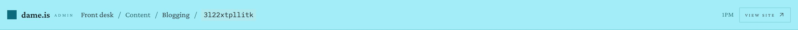<figcaption>The admin’s top bar at 1 pm. Accent square for a mark, “admin” at 0.18em, the rkey in Plex Mono, “1PM”, and “View site” in wide small caps.</figcaption></figure>
      <figure class="shot" style="width: 216px">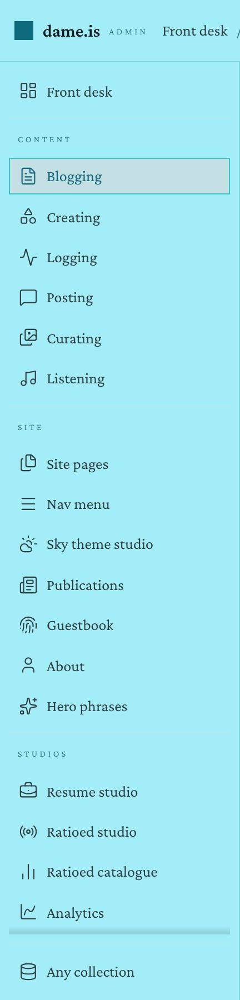<figcaption>The rail: boxed chips, the open one in accent text over a 20% mix.</figcaption></figure>
      <figure class="shot" style="width: min(100%, 470px)">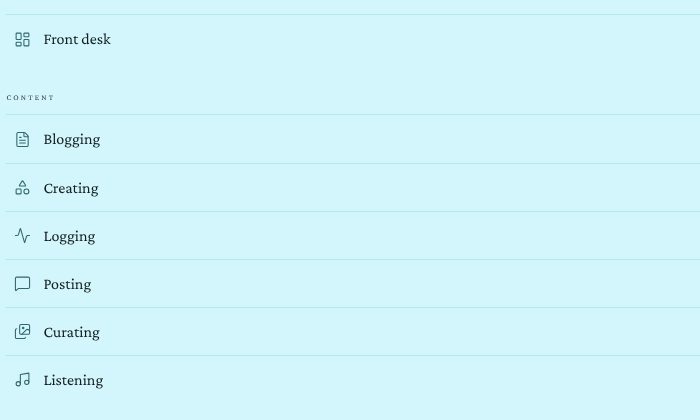<figcaption><strong>Already right:</strong> the same surfaces in the directory sheet the site opens from its bottom bar. Hairline rows, eyebrow heads.</figcaption></figure>
    </div>
  </div>

  <div class="concept-after">
    <p class="concept-label">Proposed · desk, 1 pm</p>
    <div class="frame-scroll">
      <div class="frame frame--desk f-desk sky-13" role="img" aria-label="Proposed admin at 1 pm: the site's mark and a running head in the top bar, a rail of hairline rows with counts, and the front desk with a figures band, a needs-you ledger and a latest-records ledger.">
        <header class="f-top">
          <span class="f-mark"><b>dame.is</b></span>
          <span class="f-crumbs"><span class="sep">/</span><span class="cur">admin</span></span>
          <span class="f-top-end">
            <span class="k-btn k-btn--sm">1 pm</span>
            <span class="k-btn k-btn--sm">View site <svg class="i"><use href="#i-out"/></svg></span>
          </span>
        </header>
        <div class="f-shell">
          <nav class="f-rail">
            <div class="f-rail-list">
              <span class="f-row k-on"><svg class="i"><use href="#i-dash"/></svg>Front desk<span class="c"></span></span>
              <span class="f-rail-head k-eyebrow">Content</span>
              <span class="f-row"><svg class="i"><use href="#i-file"/></svg>Blogging<span class="c">20</span></span>
              <span class="f-row"><svg class="i"><use href="#i-shapes"/></svg>Creating<span class="c">8</span></span>
              <span class="f-row"><svg class="i"><use href="#i-activity"/></svg>Logging<span class="c"></span></span>
              <span class="f-row"><svg class="i"><use href="#i-msg"/></svg>Posting<span class="c"></span></span>
              <span class="f-row"><svg class="i"><use href="#i-images"/></svg>Curating<span class="c">6</span></span>
              <span class="f-row"><svg class="i"><use href="#i-music"/></svg>Listening<span class="c"></span></span>
              <span class="f-rail-head k-eyebrow">Site</span>
              <span class="f-row"><svg class="i"><use href="#i-files"/></svg>Site pages<span class="c">8</span></span>
              <span class="f-row"><svg class="i"><use href="#i-menu"/></svg>Nav menu<span class="c"></span></span>
              <span class="f-row"><svg class="i"><use href="#i-sky"/></svg>Sky theme studio<span class="c"></span></span>
              <span class="f-row"><svg class="i"><use href="#i-news"/></svg>Publications<span class="c">2</span></span>
              <span class="f-row"><svg class="i"><use href="#i-finger"/></svg>Guestbook<span class="c"></span></span>
              <span class="f-row"><svg class="i"><use href="#i-user"/></svg>About<span class="c">1</span></span>
              <span class="f-row"><svg class="i"><use href="#i-sparkle"/></svg>Hero phrases<span class="c">7</span></span>
              <span class="f-rail-head k-eyebrow">Studios</span>
              <span class="f-row"><svg class="i"><use href="#i-brief"/></svg>Resume studio<span class="c">3</span></span>
              <span class="f-row"><svg class="i"><use href="#i-radio"/></svg>Ratioed studio<span class="c"></span></span>
              <span class="f-row"><svg class="i"><use href="#i-bars"/></svg>Ratioed catalogue<span class="c">8</span></span>
              <span class="f-row"><svg class="i"><use href="#i-spline"/></svg>Analytics<span class="c"></span></span>
              <span class="f-row"><svg class="i"><use href="#i-shield"/></svg>Moderation<span class="c"></span></span>
            </div>
            <div class="f-rail-foot"><span class="k-btn k-btn--text k-btn--sm"><svg class="i"><use href="#i-db"/></svg>Open any collection…</span></div>
          </nav>
          <div class="f-pane">
            <div class="fd">
              <div class="fd-head">
                <h1>Front desk</h1>
                <p>Counts, what needs you, and the way in to everything else.</p>
                <span class="k-btn k-btn--sm"><svg class="i"><use href="#i-refresh"/></svg>Refresh counts</span>
              </div>
              <div class="k-fig"><dl>
                <div><dt>Published</dt><dd>25</dd><dd class="note">blog and portfolio</dd></div>
                <div><dt>Drafts</dt><dd><a>3</a></dd><dd class="note">written, not published</dd></div>
                <div><dt>Hidden</dt><dd>4</dd><dd class="note">galleries, phrases, résumés</dd></div>
                <div><dt>Signatures</dt><dd>25</dd><dd class="note">none hidden</dd></div>
              </dl></div>
              <div class="fd-cols">
                <div>
                  <div class="k-sh"><h2 class="k-sh-t">Needs you</h2><span class="k-sh-m">4</span></div>
                  <div class="need"><span class="need-l">3 drafts</span><span class="k-btn k-btn--text k-btn--sm">Finish or publish →</span>
                    <ul class="need-subs"><li><a class="k-link">Notes toward a smaller feed</a></li><li><a class="k-link">Small tools, kept sharp</a></li><li><a class="k-link">A site that knows what hour it is</a></li></ul></div>
                  <div class="need"><span class="need-l">8 legacy posts not migrated</span><span class="k-btn k-btn--text k-btn--sm">Run the migration →</span></div>
                  <p class="need-tier k-eyebrow">Consistency checks</p>
                  <div class="need"><span class="need-l">3 page records the site never reads</span><span class="k-btn k-btn--text k-btn--sm">Review →</span></div>
                  <div class="need"><span class="need-l">2 publications with no URL</span><span class="k-btn k-btn--text k-btn--sm">Add the URLs →</span></div>
                </div>
                <div>
                  <div class="k-sh"><h2 class="k-sh-t">Latest records</h2><span class="k-sh-m">newest first</span></div>
                  <div class="led"><span class="led-note"><span class="v">blogging</span><span class="t">Apr 2</span></span><span class="led-t">On keeping a website like a garden</span><span class="k-mono">3l22xtpmjz5p</span></div>
                  <div class="led"><span class="led-note"><span class="v">curating</span><span class="t">Apr 2</span></span><span class="led-t">Soft architecture</span><span class="k-mono">soft-architecture</span></div>
                  <div class="led"><span class="led-note"><span class="v">blogging</span><span class="t">Apr 1</span></span><span class="led-t">Notes toward a smaller feed</span><span class="k-mono">3l22xtpllitk</span></div>
                  <div class="led"><span class="led-note"><span class="v">site pages</span><span class="t">Apr 1</span></span><span class="led-t">Welcoming</span><span class="k-mono">welcoming</span></div>
                  <div class="led"><span class="led-note"><span class="v">site pages</span><span class="t">Mar 31</span></span><span class="led-t">Blogging</span><span class="k-mono">blogging</span></div>
                  <div class="led"><span class="led-note"><span class="v">curating</span><span class="t">Mar 31</span></span><span class="led-t">Field notes</span><span class="k-mono">field-notes</span></div>
                </div>
              </div>
            </div>
          </div>
        </div>
        <span class="pin" style="top: 17px; left: 0">1</span>
        <span class="pin" style="top: 17px; left: 186px">2</span>
        <span class="pin" style="top: 17px; left: 1002px">3</span>
        <span class="pin" style="top: 66px; left: 186px">4</span>
        <span class="pin" style="top: 104px; left: 78px">5</span>
        <span class="pin" style="top: 157px; left: 150px">6</span>
        <span class="pin" style="top: 696px; left: 186px">7</span>
      </div>
    </div>
    <p class="frame-caption">The pane shows the front desk, which is <a href="#a-02">a-02</a>. Pins 1–7 are the navigation changes.</p>
  </div>

  <ul class="concept-notes">
    <li><span class="pin pin--static">1</span><strong>The site’s mark.</strong> The hourly sky avatar and the “dame.is” wordmark, as <code>.chrome-mark-img</code> draws them, in place of the accent square (<code>adminShell.css:231</code>) and the 0.18em “admin” tag.</li>
    <li><span class="pin pin--static">2</span><strong>A running head for crumbs.</strong> Slash-led, ink-soft links, the current page in ink at 600, the way <code>/logging/3mz22ky5jbu25</code> prints its trail. “admin” is the root and links to the front desk; the group name (“Content”) drops out because the rail already says it. An rkey sets in the serif, as the public trail sets it, not in Plex Mono (<code>adminShell.css:297</code>).</li>
    <li><span class="pin pin--static">3</span><strong>Two small Buttons.</strong> The hour reads “1 pm” in the house style, where <code>AdminTopBar.jsx:27</code> prints “1PM”, and links to the sky studio like the bottom bar’s chip. “View site” is <code>Button size="sm"</code> in sentence case.</li>
    <li><span class="pin pin--static">4</span><strong>The kit’s “on”.</strong> The 16% wash, an accent hairline and ink text. Today the open row is accent text on a 20% mix (<code>adminShell.css:630</code>); hover becomes the 8% wash.</li>
    <li><span class="pin pin--static">5</span><strong>Group heads are <code>.eyebrow</code>.</strong> 0.1em, not their own 0.18em rule, so the label switch on <code>/colophon</code> reaches them too.</li>
    <li><span class="pin pin--static">6</span><strong>Directory rows with a count.</strong> Icon, label and a quiet tabular count at the right, on hairlines, as the directory sheet draws them. The counts are already fetched for <code>isAbsent</code> (<code>AdminRail.jsx:312</code>). The large collections that are never counted show no number, as the front desk already does.</li>
    <li><span class="pin pin--static">7</span><strong>The escape hatch is a text button.</strong> “Open any collection…” keeps its place outside the scroller, so it never scrolls away.</li>
    <li><strong>Empty is a number, not a fade.</strong> A collection that came back empty says “0” at full ink. The current <code>opacity: 0.55</code> (<code>adminShell.css:639</code>) puts its label at 2.78:1 at 1 pm and 3.09:1 at 7 pm.</li>
  </ul>
  <p class="concept-tradeoff"><strong>Tradeoff.</strong> Counts make the rail a little busier than icon chips, and Dame kept the public compass a plain list on purpose. If counts feel like noise here too, drop the right column and keep everything else. At 21 surfaces the rail still scrolls on a laptop either way.</p>
</section>

<section class="concept" id="a-02" aria-labelledby="a-02-t">
  <div class="concept-head">
    <p class="concept-eyebrow">a-02 · front desk</p>
    <h2 class="concept-title" id="a-02-t">Counts as a figures band, what needs you as a ledger, section heads on a rule</h2>
    <p class="concept-lede">The front desk is the admin’s home page and the screen most like a public page: a few numbers, a short list of jobs, the latest records. The site sets each of those already, on /logging, /listening and the home ledger.</p>
  </div>
  <div class="concept-before">
    <p class="concept-label">Now · 1 pm</p>
    <div class="shots">
      <figure class="shot">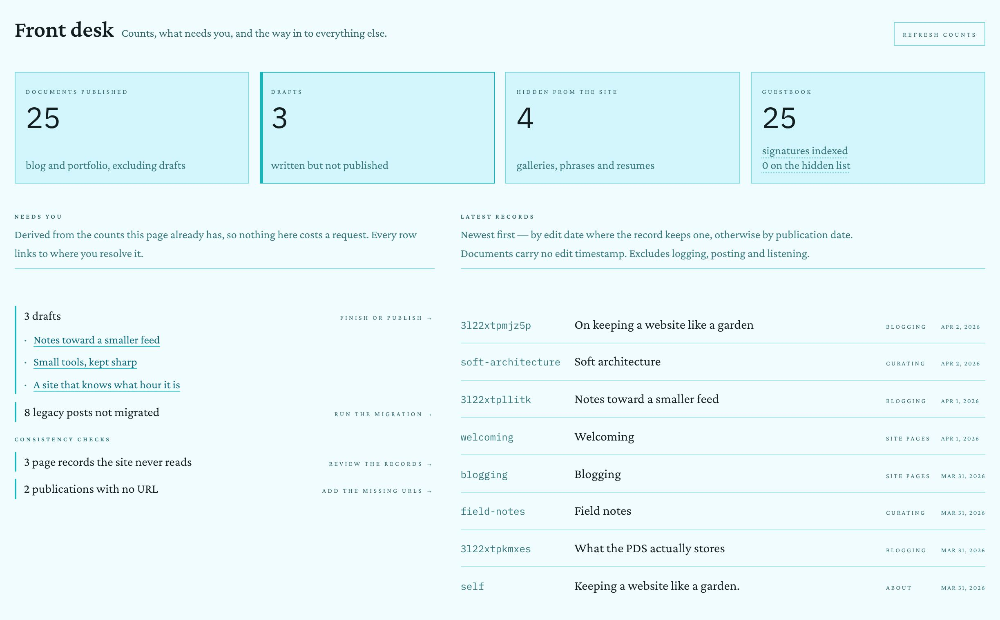<figcaption>Boxed tiles on <code>--page-edge</code>, numerals in Plex Mono at 36px, a tan edge on Drafts, tan rules on every need, and two-line explanations under 0.18em heads.</figcaption></figure>
    </div>
    <p class="frame-caption">The proposal is drawn in the <a href="#a-01">a-01</a> frame above.</p>
  </div>
  <ul class="concept-notes">
    <li><strong>One Figures band.</strong> The four tiles (<code>frontDesk.css:117</code>, <code>:178</code>) become the ruled band /logging uses for “Recent state”: eyebrow label, serif tabular numeral, italic note. Drafts links to the drafts filter, so its numeral takes the accent; that is the kit’s rule for a figure you can follow.</li>
    <li><strong>Attention said in words.</strong> The tan inset edge on Drafts and the tan rule on every need (<code>frontDesk.css:153</code>, <code>:346</code>) go. The section is called “Needs you” and only lists what isn’t zero, which already says it. The site took the accent bar off its feed rows in #335.</li>
    <li><strong>SectionHeads.</strong> “Needs you · 4” and “Latest records · newest first”, 22px on a hairline. The paragraphs explaining how each list is derived can move to a <code>title</code> or a line at the foot; the owner reads them once.</li>
    <li><strong>Actions as text buttons.</strong> “Finish or publish →” in sentence case at 13px, replacing <code>.fd-need-action</code>’s 0.18em small caps.</li>
    <li><strong>Latest records as ledger rows.</strong> Gerund over date in the margin, title in the column, rkey as a quiet mono folio. The gerund is a link to its surface, as the verb is on the home ledger.</li>
    <li><strong>Refresh</strong> is <code>Button size="sm"</code> with its glyph, replacing <code>.fd-action</code>.</li>
  </ul>
</section>

<!-- ================================================================ -->
<!-- a-03 · Workbench                                                    -->
<!-- ================================================================ -->
<section class="concept" id="a-03" aria-labelledby="a-03-t">
  <div class="concept-head">
    <p class="concept-eyebrow">a-03 · workbench</p>
    <h2 class="concept-title" id="a-03-t">The list and the editor, with one filled button between them</h2>
    <p class="concept-lede">This is the screen the owner spends the most time on. Today New and Save are filled alike, each record carries two tinted identifier chips, the tabs use a third selected style and the status strip looks like a toolbar.</p>
  </div>
  <div class="concept-before">
    <p class="concept-label">Now · 1 pm, with one unsaved edit</p>
    <div class="shots">
      <figure class="shot" style="width: min(100%, 300px)">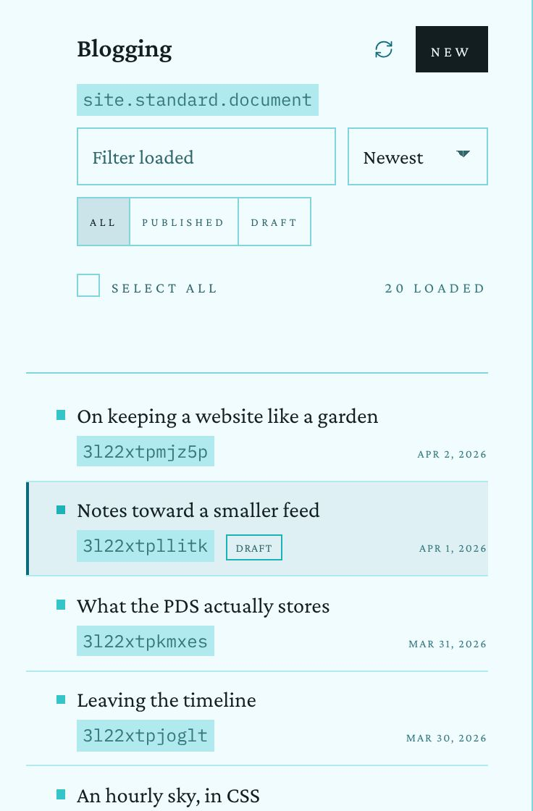<figcaption>The list: tinted NSID and rkey chips, accent square bullets, a 12px small-caps switch, small-caps dates.</figcaption></figure>
      <figure class="shot" style="width: min(100%, 540px)">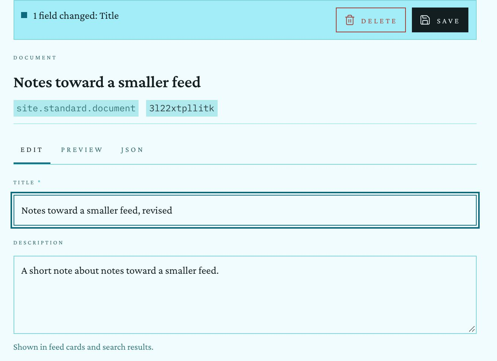<figcaption>The editor: a raised strip, chips for identity, underline tabs, labels at 0.16em.</figcaption></figure>
      <figure class="shot" style="width: min(100%, 360px)">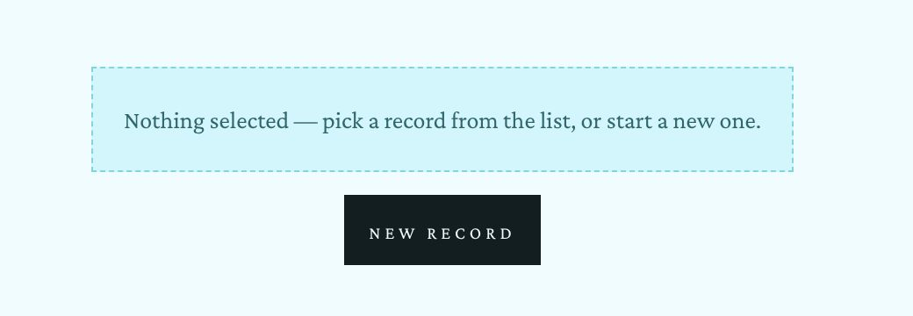<figcaption>With nothing selected: a dashed box (which the kit reads as “disabled”) and a black button.</figcaption></figure>
    </div>
  </div>
  <div class="concept-after">
    <p class="concept-label">Proposed · desk, 1 pm</p>
    <div class="frame-scroll">
      <div class="frame frame--desk f-desk sky-13" role="img" aria-label="Proposed workbench at 1 pm: running head with the rkey and the collection NSID, rail with Blogging on, a list pane with a section head, segmented filter and plain rows, and an editor with a hairline status strip, a facts line, a URI folio, a segmented Edit, Preview, JSON switch and eyebrow field labels.">
        <header class="f-top">
          <span class="f-mark"><b>dame.is</b></span>
          <span class="f-crumbs"><span class="sep">/</span><a>admin</a><span class="sep">/</span><a>blogging</a><span class="sep">/</span><span class="cur">3l22xtpllitk</span></span>
          <span class="f-top-end">
            <span class="k-eyebrow">site.standard.document</span>
            <span class="k-btn k-btn--sm">1 pm</span>
            <span class="k-btn k-btn--sm">View site <svg class="i"><use href="#i-out"/></svg></span>
          </span>
        </header>
        <div class="f-shell f-shell--list">
          <nav class="f-rail">
            <div class="f-rail-list">
              <span class="f-row"><svg class="i"><use href="#i-dash"/></svg>Front desk<span class="c"></span></span>
              <span class="f-rail-head k-eyebrow">Content</span>
              <span class="f-row k-on"><svg class="i"><use href="#i-file"/></svg>Blogging<span class="c">20</span></span>
              <span class="f-row"><svg class="i"><use href="#i-shapes"/></svg>Creating<span class="c">8</span></span>
              <span class="f-row"><svg class="i"><use href="#i-activity"/></svg>Logging<span class="c"></span></span>
              <span class="f-row"><svg class="i"><use href="#i-msg"/></svg>Posting<span class="c"></span></span>
              <span class="f-row"><svg class="i"><use href="#i-images"/></svg>Curating<span class="c">6</span></span>
              <span class="f-row"><svg class="i"><use href="#i-music"/></svg>Listening<span class="c"></span></span>
              <span class="f-rail-head k-eyebrow">Site</span>
              <span class="f-row"><svg class="i"><use href="#i-files"/></svg>Site pages<span class="c">8</span></span>
              <span class="f-row"><svg class="i"><use href="#i-menu"/></svg>Nav menu<span class="c"></span></span>
              <span class="f-row"><svg class="i"><use href="#i-sky"/></svg>Sky theme studio<span class="c"></span></span>
              <span class="f-row"><svg class="i"><use href="#i-news"/></svg>Publications<span class="c">2</span></span>
              <span class="f-row"><svg class="i"><use href="#i-finger"/></svg>Guestbook<span class="c"></span></span>
              <span class="f-row"><svg class="i"><use href="#i-user"/></svg>About<span class="c">1</span></span>
              <span class="f-row"><svg class="i"><use href="#i-sparkle"/></svg>Hero phrases<span class="c">7</span></span>
              <span class="f-rail-head k-eyebrow">Studios</span>
              <span class="f-row"><svg class="i"><use href="#i-brief"/></svg>Resume studio<span class="c">3</span></span>
              <span class="f-row"><svg class="i"><use href="#i-radio"/></svg>Ratioed studio<span class="c"></span></span>
              <span class="f-row"><svg class="i"><use href="#i-bars"/></svg>Ratioed catalogue<span class="c">8</span></span>
              <span class="f-row"><svg class="i"><use href="#i-spline"/></svg>Analytics<span class="c"></span></span>
            </div>
            <div class="f-rail-foot"><span class="k-btn k-btn--text k-btn--sm"><svg class="i"><use href="#i-db"/></svg>Open any collection…</span></div>
          </nav>
          <div class="f-pane f-pane--list">
            <div class="k-sh"><h2 class="k-sh-t">Blogging</h2><span class="k-sh-m"><span class="k-btn k-btn--sm"><svg class="i"><use href="#i-plus"/></svg>New</span></span></div>
            <div class="lp-filter"><span class="k-input"><span class="k-ph">Filter loaded</span></span><span class="k-input">Newest<svg class="i chev"><use href="#i-down"/></svg></span></div>
            <div class="k-seg"><span class="k-seg-key k-on">All <span class="n">20</span></span><span class="k-seg-key">Published <span class="n">17</span></span><span class="k-seg-key">Drafts <span class="n">3</span></span></div>
            <div class="lp-sel"><span class="k-check"></span>Select all<span class="k-meta">20 loaded</span></div>
            <div class="lp-rows">
              <div class="lp-row"><span class="t">On keeping a website like a garden</span><span class="m">Apr 2, 2026<span class="k-mono">3l22xtpmjz5p</span></span></div>
              <div class="lp-row k-on"><span class="t">Notes toward a smaller feed</span><span class="m">Apr 1, 2026<span class="k-mono">3l22xtpllitk</span><span class="k-tag">draft</span></span></div>
              <div class="lp-row"><span class="t">What the PDS actually stores</span><span class="m">Mar 31, 2026<span class="k-mono">3l22xtpkmxes</span></span></div>
              <div class="lp-row"><span class="t">Leaving the timeline</span><span class="m">Mar 30, 2026<span class="k-mono">3l22xtpjoglt</span></span></div>
              <div class="lp-row"><span class="t">An hourly sky, in CSS</span><span class="m">Mar 29, 2026<span class="k-mono">3l22xtpipvvj</span></span></div>
              <div class="lp-row"><span class="t">Guestbooks are backlinks</span><span class="m">Mar 28, 2026<span class="k-mono">3l22xtphrelc</span></span></div>
              <div class="lp-row"><span class="t">Every play, kept</span><span class="m">Mar 27, 2026<span class="k-mono">3l22xtpgst5g</span></span></div>
              <div class="lp-row"><span class="t">Small tools, kept sharp</span><span class="m">Mar 25, 2026<span class="k-mono">3l22xtpevrbp</span><span class="k-tag">draft</span></span></div>
            </div>
          </div>
          <div class="f-pane">
            <div class="ed-strip">
              <span class="st">1 field changed: Title</span>
              <span class="k-btn k-btn--sm k-btn--danger"><svg class="i"><use href="#i-trash"/></svg>Delete</span>
              <span class="k-btn k-btn--sm k-btn--primary"><svg class="i"><use href="#i-save"/></svg>Save</span>
            </div>
            <div class="ed">
              <h1>Notes toward a smaller feed</h1>
              <p class="ed-facts">Draft · dame is blogging · April 1, 2026</p>
              <p class="ed-uri">at://dame.is/site.standard.document/3l22xtpllitk</p>
              <div class="k-sh k-sh--sm"><h2 class="k-sh-t">Fields</h2><span class="k-sh-m"><span class="k-seg"><span class="k-seg-key k-on">Edit</span><span class="k-seg-key">Preview</span><span class="k-seg-key">JSON</span></span></span></div>
              <div class="ed-field"><span class="k-eyebrow">Title <span class="req">· required</span></span><span class="k-input is-focus">Notes toward a smaller feed, revised</span></div>
              <div class="ed-field"><span class="k-eyebrow">Description</span><span class="k-input ed-ta">A short note about notes toward a smaller feed.</span><span class="k-hint">Shown in feed cards and search results.</span></div>
              <div class="ed-field"><span class="k-eyebrow">Publication <span class="req">· required</span></span><span class="k-input">dame is blogging<svg class="i chev"><use href="#i-down"/></svg></span><span class="k-hint">Portfolio publication → /creating. Blog publication → /blogging.</span></div>
              <div class="ed-field"><span class="k-eyebrow">Path</span><span class="k-input">/notes-toward-a-smaller-feed</span></div>
            </div>
          </div>
        </div>
        <span class="pin" style="top: 17px; left: 338px">1</span>
        <span class="pin" style="top: 17px; left: 840px">2</span>
        <span class="pin" style="top: 70px; left: 442px">3</span>
        <span class="pin" style="top: 181px; left: 470px">4</span>
        <span class="pin" style="top: 316px; left: 530px">5</span>
        <span class="pin" style="top: 70px; left: 994px">6</span>
        <span class="pin" style="top: 152px; left: 900px">7</span>
        <span class="pin" style="top: 194px; left: 1150px">8</span>
        <span class="pin" style="top: 244px; left: 660px">9</span>
      </div>
    </div>
    <p class="concept-label" style="margin-top: 28px">Proposed · desk, 7 pm</p>
    <div class="frame-scroll">
      <div class="frame frame--desk f-desk sky-19" role="img" aria-label="Proposed workbench at 7 pm: running head with the rkey and the collection NSID, rail with Blogging on, a list pane with a section head, segmented filter and plain rows, and an editor with a hairline status strip, a facts line, a URI folio, a segmented Edit, Preview, JSON switch and eyebrow field labels.">
        <header class="f-top">
          <span class="f-mark"><b>dame.is</b></span>
          <span class="f-crumbs"><span class="sep">/</span><a>admin</a><span class="sep">/</span><a>blogging</a><span class="sep">/</span><span class="cur">3l22xtpllitk</span></span>
          <span class="f-top-end">
            <span class="k-eyebrow">site.standard.document</span>
            <span class="k-btn k-btn--sm">7 pm</span>
            <span class="k-btn k-btn--sm">View site <svg class="i"><use href="#i-out"/></svg></span>
          </span>
        </header>
        <div class="f-shell f-shell--list">
          <nav class="f-rail">
            <div class="f-rail-list">
              <span class="f-row"><svg class="i"><use href="#i-dash"/></svg>Front desk<span class="c"></span></span>
              <span class="f-rail-head k-eyebrow">Content</span>
              <span class="f-row k-on"><svg class="i"><use href="#i-file"/></svg>Blogging<span class="c">20</span></span>
              <span class="f-row"><svg class="i"><use href="#i-shapes"/></svg>Creating<span class="c">8</span></span>
              <span class="f-row"><svg class="i"><use href="#i-activity"/></svg>Logging<span class="c"></span></span>
              <span class="f-row"><svg class="i"><use href="#i-msg"/></svg>Posting<span class="c"></span></span>
              <span class="f-row"><svg class="i"><use href="#i-images"/></svg>Curating<span class="c">6</span></span>
              <span class="f-row"><svg class="i"><use href="#i-music"/></svg>Listening<span class="c"></span></span>
              <span class="f-rail-head k-eyebrow">Site</span>
              <span class="f-row"><svg class="i"><use href="#i-files"/></svg>Site pages<span class="c">8</span></span>
              <span class="f-row"><svg class="i"><use href="#i-menu"/></svg>Nav menu<span class="c"></span></span>
              <span class="f-row"><svg class="i"><use href="#i-sky"/></svg>Sky theme studio<span class="c"></span></span>
              <span class="f-row"><svg class="i"><use href="#i-news"/></svg>Publications<span class="c">2</span></span>
              <span class="f-row"><svg class="i"><use href="#i-finger"/></svg>Guestbook<span class="c"></span></span>
              <span class="f-row"><svg class="i"><use href="#i-user"/></svg>About<span class="c">1</span></span>
              <span class="f-row"><svg class="i"><use href="#i-sparkle"/></svg>Hero phrases<span class="c">7</span></span>
              <span class="f-rail-head k-eyebrow">Studios</span>
              <span class="f-row"><svg class="i"><use href="#i-brief"/></svg>Resume studio<span class="c">3</span></span>
              <span class="f-row"><svg class="i"><use href="#i-radio"/></svg>Ratioed studio<span class="c"></span></span>
              <span class="f-row"><svg class="i"><use href="#i-bars"/></svg>Ratioed catalogue<span class="c">8</span></span>
              <span class="f-row"><svg class="i"><use href="#i-spline"/></svg>Analytics<span class="c"></span></span>
            </div>
            <div class="f-rail-foot"><span class="k-btn k-btn--text k-btn--sm"><svg class="i"><use href="#i-db"/></svg>Open any collection…</span></div>
          </nav>
          <div class="f-pane f-pane--list">
            <div class="k-sh"><h2 class="k-sh-t">Blogging</h2><span class="k-sh-m"><span class="k-btn k-btn--sm"><svg class="i"><use href="#i-plus"/></svg>New</span></span></div>
            <div class="lp-filter"><span class="k-input"><span class="k-ph">Filter loaded</span></span><span class="k-input">Newest<svg class="i chev"><use href="#i-down"/></svg></span></div>
            <div class="k-seg"><span class="k-seg-key k-on">All <span class="n">20</span></span><span class="k-seg-key">Published <span class="n">17</span></span><span class="k-seg-key">Drafts <span class="n">3</span></span></div>
            <div class="lp-sel"><span class="k-check"></span>Select all<span class="k-meta">20 loaded</span></div>
            <div class="lp-rows">
              <div class="lp-row"><span class="t">On keeping a website like a garden</span><span class="m">Apr 2, 2026<span class="k-mono">3l22xtpmjz5p</span></span></div>
              <div class="lp-row k-on"><span class="t">Notes toward a smaller feed</span><span class="m">Apr 1, 2026<span class="k-mono">3l22xtpllitk</span><span class="k-tag">draft</span></span></div>
              <div class="lp-row"><span class="t">What the PDS actually stores</span><span class="m">Mar 31, 2026<span class="k-mono">3l22xtpkmxes</span></span></div>
              <div class="lp-row"><span class="t">Leaving the timeline</span><span class="m">Mar 30, 2026<span class="k-mono">3l22xtpjoglt</span></span></div>
              <div class="lp-row"><span class="t">An hourly sky, in CSS</span><span class="m">Mar 29, 2026<span class="k-mono">3l22xtpipvvj</span></span></div>
              <div class="lp-row"><span class="t">Guestbooks are backlinks</span><span class="m">Mar 28, 2026<span class="k-mono">3l22xtphrelc</span></span></div>
              <div class="lp-row"><span class="t">Every play, kept</span><span class="m">Mar 27, 2026<span class="k-mono">3l22xtpgst5g</span></span></div>
              <div class="lp-row"><span class="t">Small tools, kept sharp</span><span class="m">Mar 25, 2026<span class="k-mono">3l22xtpevrbp</span><span class="k-tag">draft</span></span></div>
            </div>
          </div>
          <div class="f-pane">
            <div class="ed-strip">
              <span class="st">1 field changed: Title</span>
              <span class="k-btn k-btn--sm k-btn--danger"><svg class="i"><use href="#i-trash"/></svg>Delete</span>
              <span class="k-btn k-btn--sm k-btn--primary"><svg class="i"><use href="#i-save"/></svg>Save</span>
            </div>
            <div class="ed">
              <h1>Notes toward a smaller feed</h1>
              <p class="ed-facts">Draft · dame is blogging · April 1, 2026</p>
              <p class="ed-uri">at://dame.is/site.standard.document/3l22xtpllitk</p>
              <div class="k-sh k-sh--sm"><h2 class="k-sh-t">Fields</h2><span class="k-sh-m"><span class="k-seg"><span class="k-seg-key k-on">Edit</span><span class="k-seg-key">Preview</span><span class="k-seg-key">JSON</span></span></span></div>
              <div class="ed-field"><span class="k-eyebrow">Title <span class="req">· required</span></span><span class="k-input is-focus">Notes toward a smaller feed, revised</span></div>
              <div class="ed-field"><span class="k-eyebrow">Description</span><span class="k-input ed-ta">A short note about notes toward a smaller feed.</span><span class="k-hint">Shown in feed cards and search results.</span></div>
              <div class="ed-field"><span class="k-eyebrow">Publication <span class="req">· required</span></span><span class="k-input">dame is blogging<svg class="i chev"><use href="#i-down"/></svg></span><span class="k-hint">Portfolio publication → /creating. Blog publication → /blogging.</span></div>
              <div class="ed-field"><span class="k-eyebrow">Path</span><span class="k-input">/notes-toward-a-smaller-feed</span></div>
            </div>
          </div>
        </div>
        </div>
    </div>
    <p class="frame-caption">The same screen at 7 pm. Save is the hour’s orchid, the open row and the open key share one wash, and nothing else on the screen is filled.</p>
    <div class="shots" style="margin-top: 20px">
      <div class="frame frame--crop sky-13" style="width: min(100%, 420px)" role="img" aria-label="Proposed empty detail pane: a fleuron, an italic line, and a quiet New record button.">
        <div class="empty" style="padding: 28px 24px">
          <span class="fl">❧</span>
          <p>Nothing open. Pick a record from the list, or start one.</p>
          <span class="k-btn k-btn--sm"><svg class="i"><use href="#i-plus"/></svg>New record</span>
        </div>
      </div>
    </div>
    <p class="frame-caption">With nothing selected, the pane speaks in the site’s own voice: the fleuron the essays and the ledger end on, one italic line, and a quiet button.</p>
  </div>
  <ul class="concept-notes">
    <li><span class="pin pin--static">1</span><strong>The rkey in the running head</strong>, set in the serif, as on a public record page.</li>
    <li><span class="pin pin--static">2</span><strong>The NSID moves to the running head’s right</strong> in the eyebrow voice, where <code>/logging/…</code> prints <code>is.dame.now</code>. That removes the tinted chip under the list title and the pair of chips under the record title.</li>
    <li><span class="pin pin--static">3</span><strong>The list head is a SectionHead</strong> with “New” in its meta slot as a quiet small button. The total moves into the filter.</li>
    <li><span class="pin pin--static">4</span><strong>Segmented, with counts.</strong> 13px sentence case and the kit’s “on”, replacing <code>.wb-list-seg-btn</code>’s 12px small caps at 0.18em (<code>recordListPane.css:209</code>). “Select all · 20 loaded” is plain 13px text.</li>
    <li><span class="pin pin--static">5</span><strong>Plain rows.</strong> No accent square, no tinted rkey box. Title in ink; date in the house short style (<code>&lt;Time variant="dateShort"&gt;</code>, “Apr 1, 2026”) and the rkey in quiet mono; “draft” is a tag (<a href="#a-05">a-05</a>). The open row wears the “on” look with no left bar (<code>recordListPane.css:379</code>).</li>
    <li><span class="pin pin--static">6</span><strong>A strip like a sheet header.</strong> On the page with a hairline under it, not a raised tinted box (<code>adminShell.css:800</code>). Delete is the quiet danger button; Save is this screen’s one primary.</li>
    <li><span class="pin pin--static">7</span><strong>Identity as the record page prints it.</strong> A facts line (“Draft · dame is blogging · April 1, 2026”) and the at:// URI as a quiet mono folio. The “Document” eyebrow above the title goes.</li>
    <li><span class="pin pin--static">8</span><strong>Edit · Preview · JSON is a Segmented</strong> in the section head’s meta slot, the way /logging sets “24h · 7 days” beside “Recent state”. Today it is a third selected style, an underline tab at 0.18em (<code>adminShell.css:755</code>).</li>
    <li><span class="pin pin--static">9</span><strong>Field labels are <code>.eyebrow</code>.</strong> “· required” in the label’s faint ink replaces the asterisk in <code>--tan</code> (<code>Admin.css:471</code>), which at 1 pm is the same teal as the hint text below it.</li>
  </ul>
</section>

<!-- ================================================================ -->
<!-- a-04 · Buttons                                                      -->
<!-- ================================================================ -->
<section class="concept" id="a-04" aria-labelledby="a-04-t">
  <div class="concept-head">
    <p class="concept-eyebrow">a-04 · controls</p>
    <h2 class="concept-title" id="a-04-t">One filled button per view, and it is the commit</h2>
    <p class="concept-lede">The admin has one button, <code>.admin-gate-button</code>, and it is always filled with <code>--ink</code>. So Tailor, Duplicate, Edit and Migrate weigh exactly what Save weighs. After dark the ink is near white, and every one of them becomes a pale slab, the brightest thing on the page. The kit has four tiers, and its primary is mixed from the hour’s accent, so it keeps its colour at every hour.</p>
  </div>
  <div class="concept-before">
    <p class="concept-label">Now</p>
    <div class="shots">
      <figure class="shot" style="width: min(100%, 470px)">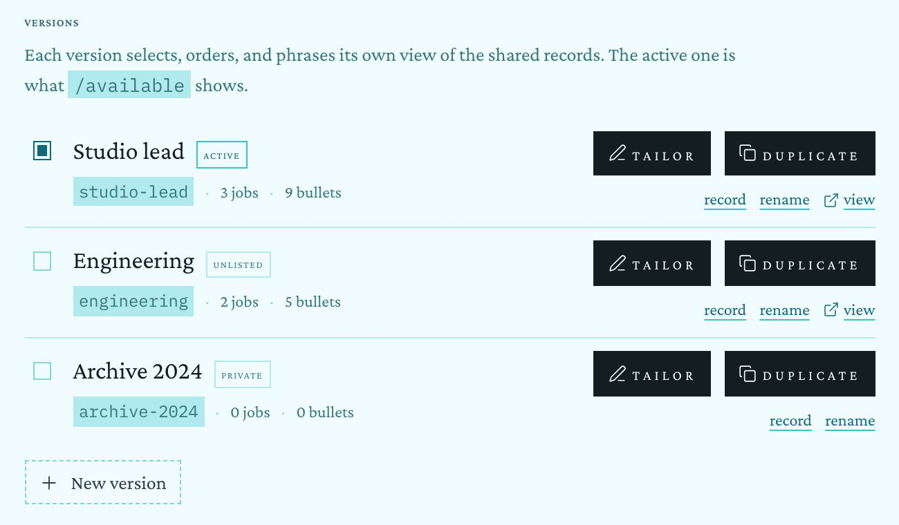<figcaption>Résumé studio: six filled buttons in three rows, and a dashed “New version” that the kit would read as disabled.</figcaption></figure>
      <figure class="shot" style="width: min(100%, 470px)">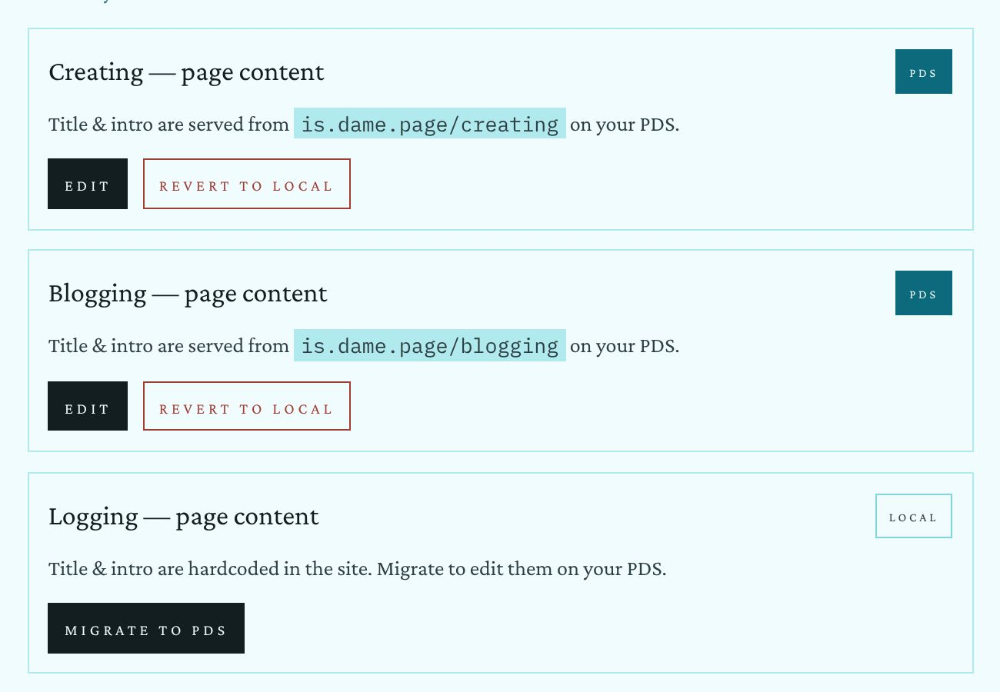<figcaption>Site pages: a filled “PDS” badge for a state, filled Edit and Migrate, red small caps for Revert.</figcaption></figure>
      <figure class="shot" style="flex: 1 1 100%">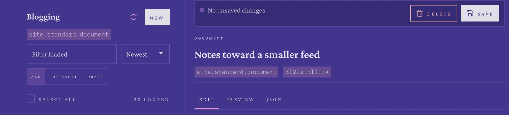<figcaption>At 7 pm, “New” and “Save” are filled with the hour’s near-white ink.</figcaption></figure>
    </div>
  </div>
  <div class="concept-after">
    <p class="concept-label">Today and the kit, by role, at 1 pm and 7 pm</p>
    <div class="frame-scroll">
      <div class="frame frame--crop" role="img" aria-label="A table comparing today's admin buttons with the kit's, by role, at 1 pm and 7 pm.">
        <div class="spec spec--btn">
          <span class="spec-h">Role</span><span class="spec-h">Today · 1 pm</span><span class="spec-h">Kit · 1 pm</span><span class="spec-h">Today · 7 pm</span><span class="spec-h">Kit · 7 pm</span>

          <span class="spec-role">Commit<small>Save, Build the archive, Publish</small></span>
          <span class="spec-cell sky-13"><span class="n-gate"><svg class="i"><use href="#i-save"/></svg>Save</span></span>
          <span class="spec-cell sky-13"><span class="k-btn k-btn--primary"><svg class="i"><use href="#i-save"/></svg>Save</span></span>
          <span class="spec-cell sky-19"><span class="n-gate"><svg class="i"><use href="#i-save"/></svg>Save</span></span>
          <span class="spec-cell sky-19"><span class="k-btn k-btn--primary"><svg class="i"><use href="#i-save"/></svg>Save</span></span>

          <span class="spec-role">Everyday<small>New, Edit, Tailor, Duplicate, Migrate</small></span>
          <span class="spec-cell sky-13"><span class="n-gate">New</span><span class="n-gate"><svg class="i"><use href="#i-pen"/></svg>Tailor</span></span>
          <span class="spec-cell sky-13"><span class="k-btn k-btn--sm"><svg class="i"><use href="#i-plus"/></svg>New</span><span class="k-btn k-btn--sm"><svg class="i"><use href="#i-pen"/></svg>Tailor</span></span>
          <span class="spec-cell sky-19"><span class="n-gate">New</span><span class="n-gate"><svg class="i"><use href="#i-pen"/></svg>Tailor</span></span>
          <span class="spec-cell sky-19"><span class="k-btn k-btn--sm"><svg class="i"><use href="#i-plus"/></svg>New</span><span class="k-btn k-btn--sm"><svg class="i"><use href="#i-pen"/></svg>Tailor</span></span>

          <span class="spec-role">Destructive<small>Delete, Revert to local, Remove · <em>proposed tier</em></small></span>
          <span class="spec-cell sky-13"><span class="n-gate n-gate--danger"><svg class="i"><use href="#i-trash"/></svg>Delete</span></span>
          <span class="spec-cell sky-13"><span class="k-btn k-btn--sm k-btn--danger"><svg class="i"><use href="#i-trash"/></svg>Delete</span><span class="k-btn k-btn--sm k-btn--danger">Revert to local</span></span>
          <span class="spec-cell sky-19"><span class="n-gate n-gate--danger"><svg class="i"><use href="#i-trash"/></svg>Delete</span></span>
          <span class="spec-cell sky-19"><span class="k-btn k-btn--sm k-btn--danger"><svg class="i"><use href="#i-trash"/></svg>Delete</span><span class="k-btn k-btn--sm k-btn--danger">Revert to local</span></span>

          <span class="spec-role">In a line<small>record, rename, view, rename key</small></span>
          <span class="spec-cell sky-13"><span class="n-sub">record</span><span class="n-sub">rename</span><span class="n-sub">view</span></span>
          <span class="spec-cell sky-13"><span class="k-btn k-btn--text k-btn--sm">Record</span><span class="k-btn k-btn--text k-btn--sm">Rename</span><span class="k-btn k-btn--text k-btn--sm">View <svg class="i"><use href="#i-out"/></svg></span></span>
          <span class="spec-cell sky-19"><span class="n-sub">record</span><span class="n-sub">rename</span><span class="n-sub">view</span></span>
          <span class="spec-cell sky-19"><span class="k-btn k-btn--text k-btn--sm">Record</span><span class="k-btn k-btn--text k-btn--sm">Rename</span><span class="k-btn k-btn--text k-btn--sm">View <svg class="i"><use href="#i-out"/></svg></span></span>

          <span class="spec-role">Nothing to do<small>Save with no changes, a running job</small></span>
          <span class="spec-cell sky-13"><span class="n-gate is-half"><svg class="i"><use href="#i-save"/></svg>Save</span></span>
          <span class="spec-cell sky-13"><span class="k-btn is-off"><svg class="i"><use href="#i-save"/></svg>Save</span></span>
          <span class="spec-cell sky-19"><span class="n-gate is-half"><svg class="i"><use href="#i-save"/></svg>Save</span></span>
          <span class="spec-cell sky-19"><span class="k-btn is-off"><svg class="i"><use href="#i-save"/></svg>Save</span></span>
        </div>
      </div>
    </div>
  </div>
  <ul class="concept-notes">
    <li><strong>Commit is primary, and only commit.</strong> Save, “Build the archive”, Publish. One per view, mixed from <code>--accent-fill</code>, so it reads at 7 pm as orchid rather than white.</li>
    <li><strong>Everything else is quiet.</strong> New, Edit, Tailor, Duplicate, Migrate to PDS, Refresh, Load more: the hairline button at 28px in a row of record actions, 36px where it stands alone.</li>
    <li><strong>A destructive tier, proposed for the kit.</strong> The kit has none yet. <code>btn--danger</code> would be the quiet button with its label and hairline in <code>--danger</code>, never filled. Moderation already draws one (<code>moderation.css:346</code>), and <code>--danger</code> exists in theme.css for exactly this. It would join the specimens on /colophon.</li>
    <li><strong>Links in a line are text buttons.</strong> <code>.admin-link-subtle</code> (<code>Admin.css:185</code>) at 12px becomes <code>Button variant="text" size="sm"</code>, 13px with the rule-coloured underline.</li>
    <li><strong>Disabled is a dashed hairline</strong>, as the kit draws it, replacing <code>opacity: 0.5</code> (<code>Admin.css:101</code>). The résumé studio’s dashed “New version” box then has to become a quiet button, or it will read as switched off.</li>
    <li><strong>Measured today:</strong> 9 distinct button looks on the blogging editor screen, by height, size, case, fill and border, counting the rail’s two.</li>
  </ul>
  <div class="concept-build">
    <h3>Watch for</h3>
    <ul>
      <li><code>.admin-gate-button</code> is public API. <code>RecordEditor</code> renders it inside the public quick-edit sheet (<code>EditSheet</code>), and /exploring uses it for search and Load more. The owner decision in <code>docs/admin-rebuild-decisions.md</code> §4 freezes the quick-edit sheet. So the admin’s own panes and studios move to <code>Button</code>, and <code>.admin-gate-button</code> stays defined until Dame decides about the sheet (see the questions at the end).</li>
    </ul>
  </div>
</section>

<!-- ================================================================ -->
<!-- a-05 · Labels, tags, identifiers                                    -->
<!-- ================================================================ -->
<section class="concept" id="a-05" aria-labelledby="a-05-t">
  <div class="concept-head">
    <p class="concept-eyebrow">a-05 · type</p>
    <h2 class="concept-title" id="a-05-t">One label voice, a quiet tag, and identifiers where the site prints them</h2>
    <p class="concept-lede">The site’s labels share one rule: <code>.eyebrow</code>, 12px small caps at 0.1em, with real capitals at 11px waiting on Dame’s decision at /colophon. On the screens captured, the admin sets its labels at ten different trackings, from 0.02em to 0.18em, and 37 declarations in its stylesheets track at 0.14em or wider. None of them will follow the /colophon switch, because the switch only restyles the class.</p>
  </div>
  <div class="concept-before">
    <p class="concept-label">Now</p>
    <div class="shots">
      <figure class="shot" style="width: min(100%, 470px)">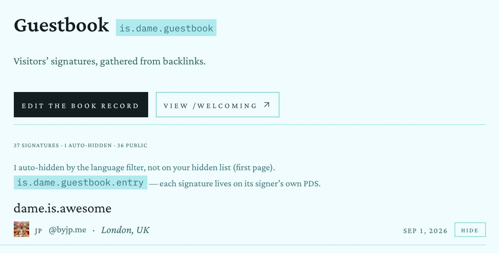<figcaption>Guestbook: the section’s count line is the smallest text on the screen. The public guestbook sets the same fact as “Signatures … 36”.</figcaption></figure>
      <figure class="shot" style="width: min(100%, 470px)">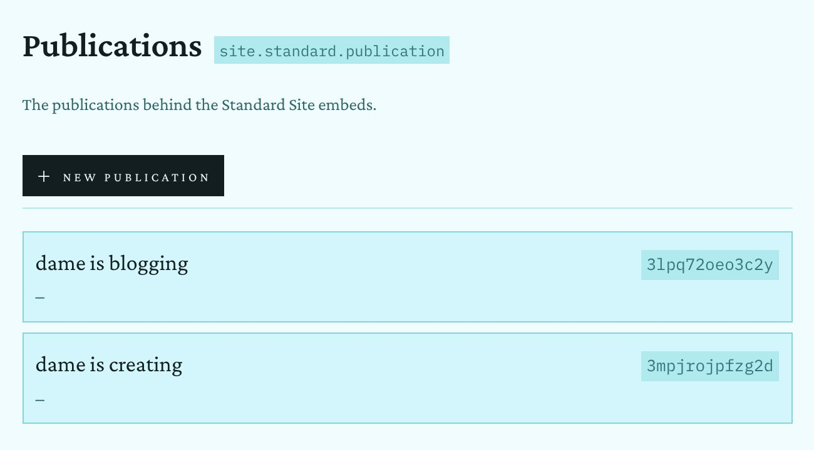<figcaption>Publications: tinted boxes, tinted chips, and a bare “–” for a missing URL.</figcaption></figure>
    </div>
  </div>
  <div class="concept-after">
    <p class="concept-label">Today and the kit, at 1 pm</p>
    <div class="frame-scroll">
      <div class="frame frame--crop" role="img" aria-label="A table comparing today's admin labels, tags and identifiers with the kit's, at 1 pm.">
        <div class="spec spec--lab">
          <span class="spec-h">Role</span><span class="spec-h">Today</span><span class="spec-h">Kit</span>

          <span class="spec-role">Field label<small><code>Admin.css:463</code></small></span>
          <span class="spec-cell sky-13"><span class="n-label">Title <span style="color: var(--tan)">*</span></span></span>
          <span class="spec-cell sky-13"><span class="k-eyebrow">Title <span class="k-faint">· required</span></span></span>

          <span class="spec-role">Section<small>Versions, Needs you, Local vs PDS</small></span>
          <span class="spec-cell sky-13"><span class="n-caps">Versions</span></span>
          <span class="spec-cell sky-13" style="display: block"><div class="k-sh k-sh--sm" style="margin: 0"><span class="k-sh-t">Versions</span><span class="k-sh-m">3</span></div></span>

          <span class="spec-role">Group head<small>the rail’s Content, Site, Studios</small></span>
          <span class="spec-cell sky-13"><span class="n-caps">Content</span></span>
          <span class="spec-cell sky-13"><span class="k-eyebrow">Content</span></span>

          <span class="spec-role">Status<small>active, on PDS, draft, private · <em>proposed tag</em></small></span>
          <span class="spec-cell sky-13"><span class="n-rschip">active</span><span class="n-badge-pds">PDS</span><span class="n-draft">draft</span></span>
          <span class="spec-cell sky-13"><span class="k-tag k-on">active</span><span class="k-tag k-on">on PDS</span><span class="k-tag">draft</span><span class="k-tag">private</span></span>

          <span class="spec-role">Collection<small>the NSID</small></span>
          <span class="spec-cell sky-13"><span class="n-chip">site.standard.document</span></span>
          <span class="spec-cell sky-13"><span class="k-eyebrow">site.standard.document</span><span class="k-hint">in the running head</span></span>

          <span class="spec-role">Record key</span>
          <span class="spec-cell sky-13"><span class="n-chip">3l22xtpllitk</span></span>
          <span class="spec-cell sky-13"><span class="k-mono">3l22xtpllitk</span></span>

          <span class="spec-role">Date<small><code>&lt;Time variant="dateShort"&gt;</code></small></span>
          <span class="spec-cell sky-13"><span class="n-time">Apr 2, 2026</span></span>
          <span class="spec-cell sky-13"><span class="k-meta k-faint">Apr 2, 2026</span></span>

          <span class="spec-role">Hour</span>
          <span class="spec-cell sky-13"><span class="n-time" style="letter-spacing: 0.04em">1PM</span></span>
          <span class="spec-cell sky-13"><span class="k-btn k-btn--sm">1 pm</span></span>

          <span class="spec-role">Count</span>
          <span class="spec-cell sky-13"><span class="n-caps">20 loaded</span></span>
          <span class="spec-cell sky-13"><span class="k-meta">20 loaded</span></span>
        </div>
      </div>
    </div>
  </div>
  <ul class="concept-notes">
    <li><strong>Every label is <code>.eyebrow</code>.</strong> Field labels, rail heads, figure labels, a sheet’s title. The admin then takes whichever voice Dame picks on /colophon, with nothing else to change.</li>
    <li><strong>A tag, proposed for the kit.</strong> The eyebrow voice in a 1px hairline box, 20px tall. A live state (active, on PDS, connected) wears the “on” look; anything else is plain. No fills: today’s filled “PDS” badge (<code>Admin.css:565</code>) uses a fill for a state, which the kit reserves for the primary action. The 9.9px résumé chips go up to the 12px of the rest.</li>
    <li><strong>The NSID belongs to the running head</strong>, as on public record pages, and the at:// URI to a mono folio. Plex Mono stays for raw data: rkeys, URIs and the JSON tab.</li>
    <li><strong>The rkey drops its tint.</strong> It is the same quiet mono <code>.wb-list-rkey</code> already uses (<code>recordListPane.css:507</code>); the tinted boxes are the extra.</li>
    <li><strong>Dates and counts leave small caps.</strong> “Apr 2, 2026” in sentence case through <code>&lt;Time&gt;</code>, as the site prints it, and “20 loaded” as plain meta.</li>
  </ul>
  <p class="concept-tradeoff"><strong>Tradeoff.</strong> A tag is a new kit part, and the site has done without one. The alternative is to set states as words in the facts line (“Draft · dame is blogging · …”), which works for the editor but is harder to scan down a list of twenty rows.</p>
</section>

<!-- ================================================================ -->
<!-- a-06 · Studios                                                      -->
<!-- ================================================================ -->
<section class="concept" id="a-06" aria-labelledby="a-06-t">
  <div class="concept-head">
    <p class="concept-eyebrow">a-06 · studios</p>
    <h2 class="concept-title" id="a-06-t">Studios get the same head, section heads and rows</h2>
    <p class="concept-lede">Each studio was built on its own and it shows: boxed cards on Site pages, tinted panels on Nav menu, black buttons in rows on the résumé, and a separate design system on Moderation (<code>moderation.css</code>, 1,441 lines). The same five parts cover all of them.</p>
  </div>
  <div class="concept-before">
    <p class="concept-label">Now · 1 pm</p>
    <div class="shots">
      <figure class="shot" style="width: min(100%, 470px)">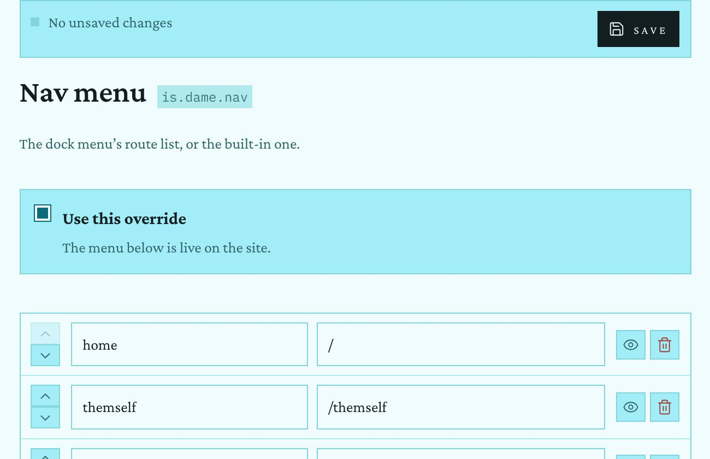<figcaption>Nav menu: stacked 16px arrows, tinted eye and bin squares, a tinted panel for one checkbox.</figcaption></figure>
      <figure class="shot" style="width: min(100%, 560px)">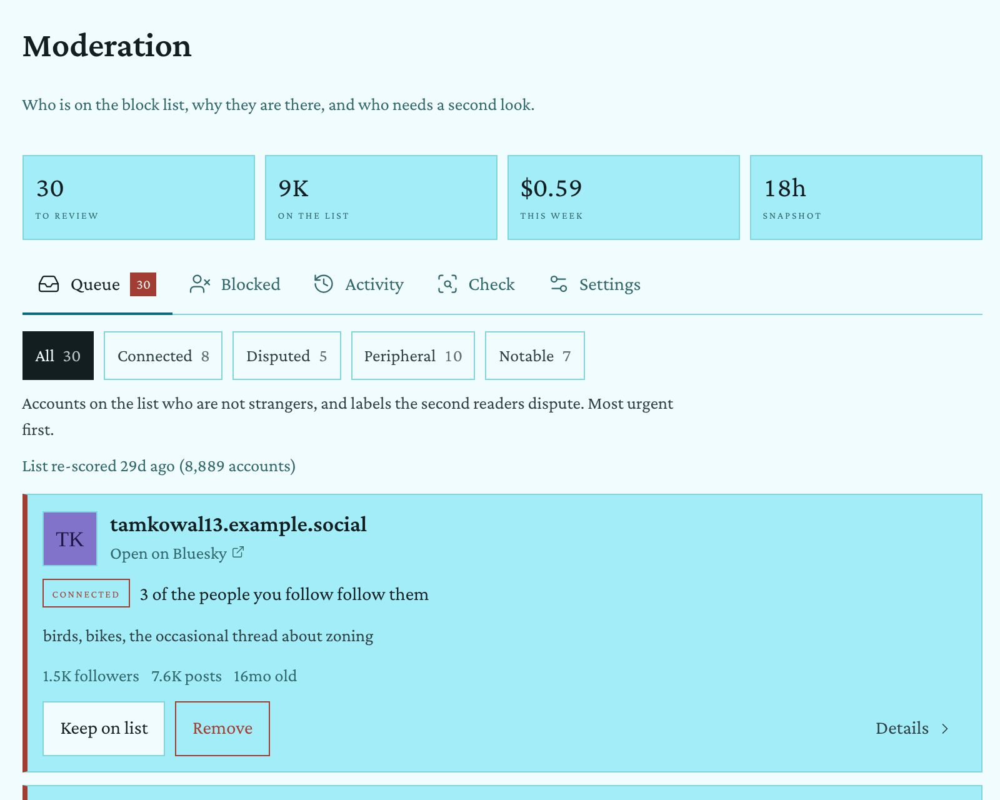<figcaption>Moderation: tinted tiles, a fourth selected style (an ink-filled chip), tinted cards with a red edge.</figcaption></figure>
    </div>
  </div>
  <div class="concept-after">
    <p class="concept-label">Proposed · 1 pm</p>
    <div class="frame-scroll">
      <div class="frame-row">
        <div class="frame frame--crop sky-13" style="width: 600px" role="img" aria-label="Proposed résumé studio: a head, a Versions section head with a count, version rows with a radio, a tag, quiet Tailor and Duplicate buttons and text buttons, and a quiet New version button.">
          <div class="st-wrap">
            <div class="st-head"><h1>Resume studio</h1><p>Every version, job and education record in one place.</p></div>
            <div>
              <div class="k-sh"><h2 class="k-sh-t">Versions</h2><span class="k-sh-m">3 · the active one is /available</span></div>
              <div class="rv"><span class="k-radio is-on"></span><span class="n">Studio lead <span class="k-tag k-on">active</span></span>
                <span class="a"><div><span class="k-btn k-btn--sm"><svg class="i"><use href="#i-pen"/></svg>Tailor</span><span class="k-btn k-btn--sm"><svg class="i"><use href="#i-copy"/></svg>Duplicate</span></div><div><span class="k-btn k-btn--text k-btn--sm">Record</span><span class="k-btn k-btn--text k-btn--sm">Rename</span><span class="k-btn k-btn--text k-btn--sm">View <svg class="i"><use href="#i-out"/></svg></span></div></span>
                <span class="m"><span class="k-mono">studio-lead</span>3 jobs · 9 bullets</span></div>
              <div class="rv"><span class="k-radio"></span><span class="n">Engineering <span class="k-tag">unlisted</span></span>
                <span class="a"><div><span class="k-btn k-btn--sm"><svg class="i"><use href="#i-pen"/></svg>Tailor</span><span class="k-btn k-btn--sm"><svg class="i"><use href="#i-copy"/></svg>Duplicate</span></div><div><span class="k-btn k-btn--text k-btn--sm">Record</span><span class="k-btn k-btn--text k-btn--sm">Rename</span><span class="k-btn k-btn--text k-btn--sm">View <svg class="i"><use href="#i-out"/></svg></span></div></span>
                <span class="m"><span class="k-mono">engineering</span>2 jobs · 5 bullets</span></div>
              <div class="rv"><span class="k-radio"></span><span class="n">Archive 2024 <span class="k-tag">private</span></span>
                <span class="a"><div><span class="k-btn k-btn--sm"><svg class="i"><use href="#i-pen"/></svg>Tailor</span><span class="k-btn k-btn--sm"><svg class="i"><use href="#i-copy"/></svg>Duplicate</span></div><div><span class="k-btn k-btn--text k-btn--sm">Record</span><span class="k-btn k-btn--text k-btn--sm">Rename</span></div></span>
                <span class="m"><span class="k-mono">archive-2024</span>0 jobs · 0 bullets</span></div>
              <div style="padding-top: 12px"><span class="k-btn k-btn--sm"><svg class="i"><use href="#i-plus"/></svg>New version</span></div>
            </div>
          </div>
        </div>

        <div class="frame frame--crop sky-13" style="width: 600px" role="img" aria-label="Proposed site pages studio: a section head with counts and one row per page, each with a tag for where its title comes from and quiet actions.">
          <div class="st-wrap">
            <div class="st-head"><h1>Site pages</h1><p>Titles, intros and bodies for each page.</p></div>
            <div>
              <div class="k-sh"><h2 class="k-sh-t">Page content</h2><span class="k-sh-m"><span class="k-btn k-btn--sm"><svg class="i"><use href="#i-plus"/></svg>New page record</span></span></div>
              <div class="pg"><span class="n">Creating</span><span class="s"><span class="k-tag k-on">on PDS</span><span class="k-mono">is.dame.page/creating</span></span><span class="a"><span class="k-btn k-btn--sm">Edit</span><span class="k-btn k-btn--sm k-btn--danger">Revert to local</span></span></div>
              <div class="pg"><span class="n">Blogging</span><span class="s"><span class="k-tag k-on">on PDS</span><span class="k-mono">is.dame.page/blogging</span></span><span class="a"><span class="k-btn k-btn--sm">Edit</span><span class="k-btn k-btn--sm k-btn--danger">Revert to local</span></span></div>
              <div class="pg"><span class="n">Logging</span><span class="s"><span class="k-tag">built in</span>hardcoded in the site</span><span class="a"><span class="k-btn k-btn--sm">Migrate to PDS</span></span></div>
              <div class="pg"><span class="n">Posting</span><span class="s"><span class="k-tag">built in</span>hardcoded in the site</span><span class="a"><span class="k-btn k-btn--sm">Migrate to PDS</span></span></div>
              <div class="pg"><span class="n">Listening</span><span class="s"><span class="k-tag">built in</span>hardcoded in the site</span><span class="a"><span class="k-btn k-btn--sm">Migrate to PDS</span></span></div>
            </div>
          </div>
        </div>
      </div>
    </div>
    <div class="frame-scroll" style="margin-top: 24px">
      <div class="frame-row">
        <div class="frame frame--crop sky-13" style="width: 720px" role="img" aria-label="Proposed moderation studio: a figures band, a segmented row of sections, a segmented filter with counts, and an account as a ruled row with quiet, danger and text buttons.">
          <div class="st-wrap">
            <div class="st-head"><h1>Moderation</h1><p>Who is on the block list, why they are there, and who needs a second look.</p></div>
            <div class="k-fig"><dl>
              <div><dt>To review</dt><dd><a>30</a></dd></div>
              <div><dt>On the list</dt><dd>9K</dd></div>
              <div><dt>This week</dt><dd>$0.59</dd><dd class="note">model spend</dd></div>
              <div><dt>Snapshot</dt><dd>18h</dd><dd class="note">old</dd></div>
            </dl></div>
            <div class="k-seg"><span class="k-seg-key k-on">Queue <span class="n">30</span></span><span class="k-seg-key">Blocked</span><span class="k-seg-key">Activity</span><span class="k-seg-key">Check</span><span class="k-seg-key">Settings</span></div>
            <div>
              <div class="k-sh k-sh--sm"><h2 class="k-sh-t">Queue</h2><span class="k-sh-m"><span class="k-seg"><span class="k-seg-key k-on">All <span class="n">30</span></span><span class="k-seg-key">Connected <span class="n">8</span></span><span class="k-seg-key">Disputed <span class="n">5</span></span><span class="k-seg-key">Peripheral <span class="n">10</span></span><span class="k-seg-key">Notable <span class="n">7</span></span></span></span></div>
              <div class="mod-card">
                <span class="mod-av">TK</span>
                <div style="display: grid; gap: 4px">
                  <h3>tamkowal13.example.social</h3>
                  <span class="h"><a class="k-link">Open on Bluesky</a></span>
                  <span class="r"><span class="k-tag">connected</span>3 of the people you follow follow them</span>
                  <span class="b">birds, bikes, the occasional thread about zoning</span>
                  <span class="k-meta">1.5K followers · 7.6K posts · 16 months old</span>
                  <span class="acts"><span class="k-btn k-btn--sm">Keep on list</span><span class="k-btn k-btn--sm k-btn--danger">Remove</span><span class="k-btn k-btn--text k-btn--sm">Details →</span></span>
                </div>
              </div>
            </div>
          </div>
        </div>

        <div class="frame frame--crop sky-13" style="width: 480px" role="img" aria-label="Proposed nav menu studio: the override as a plain checkbox row on hairlines, and rows with small icon buttons for order, visibility and removal.">
          <div class="st-wrap">
            <div class="st-head"><h1>Nav menu</h1><p>The dock menu’s route list, or the built-in one.</p></div>
            <div class="ov"><span class="k-check is-on"><svg class="i" style="font-size: 12px"><use href="#i-check"/></svg></span><span><b>Use this override</b><span>The menu below is live on the site.</span></span></div>
            <div>
              <div class="nv"><span class="ud"><span class="k-btn k-btn--sm k-btn--icon is-off"><svg class="i"><use href="#i-up"/></svg></span><span class="k-btn k-btn--sm k-btn--icon"><svg class="i"><use href="#i-down"/></svg></span></span><span class="k-input">home</span><span class="k-input">/</span><span class="tools"><span class="k-btn k-btn--sm k-btn--icon"><svg class="i"><use href="#i-eye"/></svg></span><span class="k-btn k-btn--sm k-btn--icon k-btn--danger"><svg class="i"><use href="#i-trash"/></svg></span></span></div>
              <div class="nv"><span class="ud"><span class="k-btn k-btn--sm k-btn--icon"><svg class="i"><use href="#i-up"/></svg></span><span class="k-btn k-btn--sm k-btn--icon"><svg class="i"><use href="#i-down"/></svg></span></span><span class="k-input">themself</span><span class="k-input">/themself</span><span class="tools"><span class="k-btn k-btn--sm k-btn--icon"><svg class="i"><use href="#i-eye"/></svg></span><span class="k-btn k-btn--sm k-btn--icon k-btn--danger"><svg class="i"><use href="#i-trash"/></svg></span></span></div>
              <div class="nv"><span class="ud"><span class="k-btn k-btn--sm k-btn--icon"><svg class="i"><use href="#i-up"/></svg></span><span class="k-btn k-btn--sm k-btn--icon"><svg class="i"><use href="#i-down"/></svg></span></span><span class="k-input">available</span><span class="k-input">/available</span><span class="tools"><span class="k-btn k-btn--sm k-btn--icon"><svg class="i"><use href="#i-eye"/></svg></span><span class="k-btn k-btn--sm k-btn--icon k-btn--danger"><svg class="i"><use href="#i-trash"/></svg></span></span></div>
              <div class="nv"><span class="ud"><span class="k-btn k-btn--sm k-btn--icon"><svg class="i"><use href="#i-up"/></svg></span><span class="k-btn k-btn--sm k-btn--icon"><svg class="i"><use href="#i-down"/></svg></span></span><span class="k-input">logging</span><span class="k-input">/logging</span><span class="tools"><span class="k-btn k-btn--sm k-btn--icon"><svg class="i"><use href="#i-eye"/></svg></span><span class="k-btn k-btn--sm k-btn--icon k-btn--danger"><svg class="i"><use href="#i-trash"/></svg></span></span></div>
            </div>
          </div>
        </div>
      </div>
    </div>
  </div>
  <ul class="concept-notes">
    <li><strong>One studio head.</strong> Title and intro, with the NSID in the running head instead of a tinted chip beside the title. Every studio already gets this head from <code>StudioPane.jsx:153</code>, so it is one change.</li>
    <li><strong>SectionHeads everywhere.</strong> “Versions · 3”, “Jobs · 3”, “Page content”, “Signatures · 37, 1 auto-hidden”, which is how the public guestbook sets “Signatures … 36”. <code>.admin-collection-group-heading</code> (<code>Admin.css:661</code>) retires from the admin.</li>
    <li><strong>Rows, not cards.</strong> Site pages and Publications lose their boxes and become ruled rows: name, where the content lives (a tag and a mono path), actions. A missing publication URL says “No URL yet” in italic instead of “–”.</li>
    <li><strong>Moderation joins the kit.</strong> Its stat tiles become a Figures band; its tabs and filter chips become two Segmenteds; its cards become ruled rows with Keep (quiet), Remove (danger) and Details (text). The red edge goes; “connected” is a tag. This is the largest job here, since <code>mh-*</code> is a design system of its own.</li>
    <li><strong>Nav menu.</strong> The stacked 16px arrows and the tinted squares become small icon Buttons (28px painted, 44px on touch). The bin takes <code>--danger</code>, and the first row’s “up” is a dashed, disabled key. “Use this override” sits on hairlines as a plain checkbox row.</li>
    <li><strong>Analytics</strong> loses the boxed card around “Build the archive” and gets a SectionHead; the button is the view’s one primary. The sky studio, the Ratioed studio and the listening manager need the same pass on their buttons and labels; they are not drawn here.</li>
  </ul>
</section>

<!-- ================================================================ -->
<!-- a-07 · Phone                                                        -->
<!-- ================================================================ -->
<section class="concept" id="a-07" aria-labelledby="a-07-t">
  <div class="concept-head">
    <p class="concept-eyebrow">a-07 · phone</p>
    <h2 class="concept-title" id="a-07-t">The phone already wears the site’s chrome; its pages should match it</h2>
    <p class="concept-lede">Below 62rem the admin uses the site’s own top and bottom bars, which is the right call. Between them, the pages still use the admin’s own labels, chips and rules. Two drawings show the same changes at phone width.</p>
  </div>
  <div class="concept-before">
    <p class="concept-label">Now · 390×844, 1 pm</p>
    <div class="shots">
      <figure class="shot" style="width: min(100%, 290px)">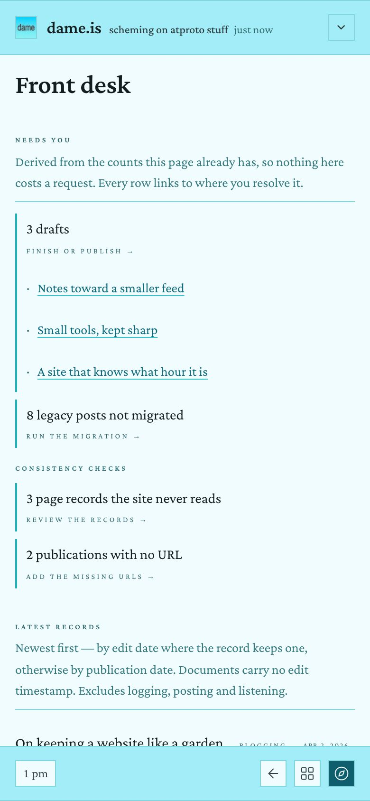<figcaption>Front desk. On a phone the counts follow “Needs you” by design; the section opens with a two-line explanation.</figcaption></figure>
      <figure class="shot" style="width: min(100%, 290px)">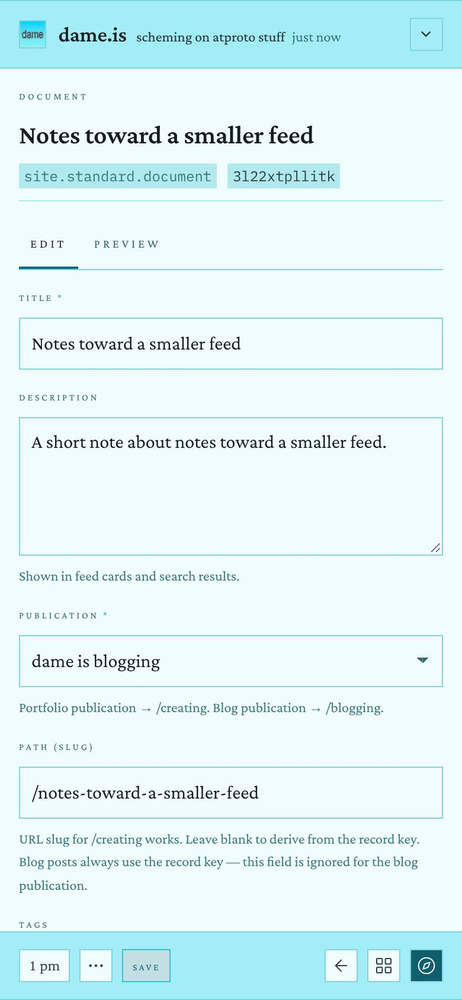<figcaption>Editor. The bar’s Save is 11.5px small caps on a 20% wash, the kit’s look for “selected”.</figcaption></figure>
    </div>
  </div>
  <div class="concept-after">
    <p class="concept-label">Proposed · 390×844, 1 pm</p>
    <div class="frame-scroll">
      <div class="frame-row zoom-75">
        <div class="frame frame--phone ph sky-13" role="img" aria-label="Proposed phone front desk: the site's top bar, Front desk, a Needs you section head with ruled rows and text-button actions, then a two-up figures band.">
          <header class="ph-top"><b>dame.is</b><span class="s">scheming on atproto stuff</span><span class="k-btn k-btn--sm k-btn--icon"><svg class="i"><use href="#i-down"/></svg></span></header>
          <div class="ph-main">
            <h1>Front desk</h1>
            <div>
              <div class="k-sh"><h2 class="k-sh-t">Needs you</h2><span class="k-sh-m">4</span></div>
              <div class="need"><span class="need-l">3 drafts</span><span class="k-btn k-btn--text k-btn--sm">Finish →</span>
                <ul class="need-subs"><li><a class="k-link">Notes toward a smaller feed</a></li><li><a class="k-link">Small tools, kept sharp</a></li><li><a class="k-link">A site that knows what hour it is</a></li></ul></div>
              <div class="need"><span class="need-l">8 legacy posts not migrated</span><span class="k-btn k-btn--text k-btn--sm">Migrate →</span></div>
              <div class="need"><span class="need-l">3 page records the site never reads</span><span class="k-btn k-btn--text k-btn--sm">Review →</span></div>
            </div>
            <div class="k-fig"><dl>
              <div><dt>Published</dt><dd>25</dd></div>
              <div><dt>Drafts</dt><dd><a>3</a></dd></div>
              <div><dt>Hidden</dt><dd>4</dd></div>
              <div><dt>Signatures</dt><dd>25</dd></div>
            </dl></div>
          </div>
          <footer class="ph-bar"><span class="k-btn k-btn--sm">1 pm</span><span class="sp"></span><span class="k-btn k-btn--sm k-btn--icon"><svg class="i"><use href="#i-back"/></svg></span><span class="k-btn k-btn--sm k-btn--icon"><svg class="i"><use href="#i-grid"/></svg></span><span class="k-btn k-btn--sm k-btn--icon fill"><svg class="i"><use href="#i-compass"/></svg></span></footer>
        </div>

        <div class="frame frame--phone ph sky-13" role="img" aria-label="Proposed phone editor: title, facts line, URI folio, a Fields section head with an Edit and Preview switch, eyebrow labels, and a bottom bar whose Save is a quiet sentence-case button.">
          <header class="ph-top"><b>dame.is</b><span class="s">scheming on atproto stuff</span><span class="k-btn k-btn--sm k-btn--icon"><svg class="i"><use href="#i-down"/></svg></span></header>
          <div class="ph-main">
            <h1 style="font-size: 28px">Notes toward a smaller feed</h1>
            <div style="display: grid; gap: 4px"><p class="ed-facts">Draft · dame is blogging · April 1, 2026</p><p class="ed-uri" style="margin: 0">at://dame.is/site.standard.document/3l22xtpllitk</p></div>
            <div class="k-sh k-sh--sm"><h2 class="k-sh-t">Fields</h2><span class="k-sh-m"><span class="k-seg"><span class="k-seg-key k-on">Edit</span><span class="k-seg-key">Preview</span></span></span></div>
            <div class="ed-field"><span class="k-eyebrow">Title <span class="req k-faint">· required</span></span><span class="k-input is-focus" style="font-size: 16px; min-height: 44px">Notes toward a smaller feed, revised</span></div>
            <div class="ed-field"><span class="k-eyebrow">Description</span><span class="k-input ed-ta" style="font-size: 16px; min-height: 88px">A short note about notes toward a smaller feed.</span><span class="k-hint">Shown in feed cards and search results.</span></div>
            <div class="ed-field"><span class="k-eyebrow">Publication</span><span class="k-input" style="font-size: 16px; min-height: 44px">dame is blogging<svg class="i chev"><use href="#i-down"/></svg></span></div>
          </div>
          <footer class="ph-bar"><span class="k-btn k-btn--sm">1 pm</span><span class="k-btn k-btn--sm k-btn--icon"><svg class="i"><use href="#i-more"/></svg></span><span class="k-btn k-btn--sm" style="color: var(--ink)"><svg class="i"><use href="#i-save"/></svg>Save</span><span class="sp"></span><span class="k-btn k-btn--sm k-btn--icon"><svg class="i"><use href="#i-back"/></svg></span><span class="k-btn k-btn--sm k-btn--icon"><svg class="i"><use href="#i-grid"/></svg></span><span class="k-btn k-btn--sm k-btn--icon fill"><svg class="i"><use href="#i-compass"/></svg></span></footer>
        </div>
      </div>
    </div>
  </div>
  <ul class="concept-notes">
    <li><strong>Figures go two-up</strong>, as the band does under 34rem on /logging. They keep their phone position after “Needs you”, which <code>FrontDesk.jsx:652</code> chose on purpose.</li>
    <li><strong>Needs you</strong> is a SectionHead with ruled rows and short text-button actions; the explanation paragraph goes.</li>
    <li><strong>Save in the bar is a quiet button in sentence case.</strong> The compass is the bar’s one filled control, so Save can’t also be filled. When there is nothing to save it shows the kit’s dashed disabled hairline. Measured today: the chip’s styles are identical before and after an edit, so the bar doesn’t say whether anything is waiting (<code>ChromeBar.css:868</code>).</li>
    <li><strong>Edit · Preview</strong> is the same Segmented as the desk, and identity is the facts line and URI folio.</li>
  </ul>
</section>

<!-- ================================================================ -->
<!-- Swap list, order of work, questions                                 -->
<!-- ================================================================ -->
<section class="block" id="swap" aria-labelledby="h-swap">
  <h2 id="h-swap">The swap list</h2>
  <p>Each admin pattern, the kit part that replaces it, and where it lives today. “New” marks the two parts this proposes adding to the kit.</p>
  <div class="tw">
    <table class="dt">
      <thead><tr><th>Admin today</th><th>Kit</th><th>Where</th></tr></thead>
      <tbody>
        <tr><td>Filled ink button, small caps 0.18em</td><td><code>Button</code> quiet; <code>variant="primary"</code> for the commit only</td><td><code>.admin-gate-button</code> <code>Admin.css:52</code>, used in 20 files</td></tr>
        <tr><td>Outlined danger in small caps; <code>.admin-danger</code> in <code>--tan</code></td><td><code>Button variant="danger"</code> (new)</td><td><code>Admin.css:106</code>, <code>moderation.css:346</code>, the status strip</td></tr>
        <tr><td>12px underlined links</td><td><code>Button variant="text" size="sm"</code></td><td><code>.admin-link-subtle</code> <code>Admin.css:185</code></td></tr>
        <tr><td>Hairline small-caps action</td><td><code>Button size="sm"</code></td><td><code>.fd-action</code> <code>frontDesk.css:54</code></td></tr>
        <tr><td>Switches and tabs, four styles</td><td><code>Segmented</code></td><td><code>.wb-list-seg-btn</code> <code>recordListPane.css:209</code>, <code>.wb-tab</code> <code>adminShell.css:755</code>, <code>.mh-chip</code>, <code>.mh-tab</code></td></tr>
        <tr><td>Selected: 20% mix, left bars, ink fill</td><td><code>.is-on</code></td><td><code>.wb-rail-btn.is-open</code> <code>adminShell.css:630</code>, <code>.wb-list-row.is-open</code> <code>recordListPane.css:379</code></td></tr>
        <tr><td>Boxed count tiles</td><td><code>Figures</code></td><td><code>.fd-tile</code> <code>frontDesk.css:117</code>, <code>.mh-stat</code></td></tr>
        <tr><td>Small-caps section labels</td><td><code>SectionHead</code></td><td><code>.fd-section-heading</code> <code>frontDesk.css:92</code>, <code>.admin-collection-group-heading</code> <code>Admin.css:661</code>, the guestbook count line</td></tr>
        <tr><td>Labels at 0.05em to 0.18em</td><td><code>.eyebrow</code></td><td><code>.admin-field-label</code> <code>Admin.css:463</code>, <code>.wb-rail-heading</code>, <code>.fd-tile-label</code>, <code>.fd-need-action</code>, 37 rules at 0.14em or wider</td></tr>
        <tr><td>Filled and tan status chips, 9.9px to 12px</td><td>Tag (new): eyebrow in a hairline, “on” for a live state</td><td><code>.admin-badge</code> <code>Admin.css:554</code>, <code>.admin-record-chip</code> <code>Admin.css:269</code>, <code>.rs-chip</code>, <code>.mh-badge</code></td></tr>
        <tr><td>Tinted NSID and rkey chips</td><td>Running-head NSID; quiet mono rkey; URI folio</td><td><code>.wb-list-nsid</code> <code>recordListPane.css:188</code>, the editor head, every studio head</td></tr>
        <tr><td>Raised status strip</td><td>The sheet-header pattern on <code>--page</code></td><td><code>.wb-strip</code> <code>adminShell.css:800</code></td></tr>
        <tr><td>Small-caps dates, “1PM”</td><td><code>&lt;Time variant="dateShort"&gt;</code>, “1 pm”</td><td><code>.wb-list-time</code>, <code>.admin-record-time</code>, <code>AdminTopBar.jsx:27</code></td></tr>
      </tbody>
    </table>
  </div>
</section>

<section class="block" id="order" aria-labelledby="h-order">
  <h2 id="h-order">Order of work</h2>
  <p>Ordered so the most visible changes land first and nothing touches a public route until Dame has answered the first question below. S is under a day, M a few days, L a week or more.</p>
  <div class="tw">
    <table class="dt">
      <thead><tr><th>Item</th><th>Effort</th><th>Files</th></tr></thead>
      <tbody>
        <tr><td>Rail and top bar: directory rows, the “on” look, eyebrow heads, the site’s mark, a running head, “1 pm”, a small “View site”</td><td class="eff">S</td><td><code>AdminRail.jsx</code>, <code>AdminTopBar.jsx</code>, <code>adminShell.css</code></td></tr>
        <tr><td>Labels onto <code>.eyebrow</code> across the shell and panes; dates through <code>&lt;Time&gt;</code></td><td class="eff">S</td><td><code>adminShell.css</code>, <code>frontDesk.css</code>, <code>recordListPane.css</code>, <code>recordDetail.css</code>, scoped rules for <code>Admin.css</code> under <code>.wb</code></td></tr>
        <tr><td>Segmented for the list filter and the editor tabs</td><td class="eff">S</td><td><code>RecordListPane.jsx</code>, <code>RecordDetail.jsx</code></td></tr>
        <tr><td>Buttons in the shell and panes: <code>Button</code>, one primary, add <code>btn--danger</code> to <code>controls.css</code> and /colophon</td><td class="eff">M</td><td><code>AdminStatusStrip.jsx</code>, <code>RecordListPane.jsx</code>, <code>RecordDetail.jsx</code>, <code>FrontDesk.jsx</code>, <code>controls.css</code>, <code>Colophon.jsx</code></td></tr>
        <tr><td>Front desk: Figures, SectionHeads, ledger rows</td><td class="eff">M</td><td><code>FrontDesk.jsx</code>, <code>frontDesk.css</code></td></tr>
        <tr><td>Tags and identifiers: the tag part, NSID to the running head, URI folio in the editor head</td><td class="eff">M</td><td><code>controls.css</code>, <code>AdminTopBar.jsx</code>, <code>RecordDetail.jsx</code>, <code>RecordListPane.jsx</code></td></tr>
        <tr><td>Studios, one at a time: pages, nav menu, publications, résumé, guestbook, analytics, then sky, Ratioed and listening</td><td class="eff">M</td><td>Each studio’s component and stylesheet; each one can then leave stylelint’s <code>LEGACY_TYPE</code> list</td></tr>
        <tr><td>Phone: the bar’s Save as a quiet button with a disabled state</td><td class="eff">S</td><td><code>ChromeBar.css:868</code>, <code>AdminChromePanels.jsx</code></td></tr>
        <tr><td>Moderation onto the kit</td><td class="eff">L</td><td><code>src/components/moderation/*</code></td></tr>
      </tbody>
    </table>
  </div>
</section>

<section class="block" id="questions" aria-labelledby="h-q">
  <h2 id="h-q">Questions for Dame</h2>
  <ol class="qs">
    <li><strong>The public quick-edit sheet.</strong> <code>RecordEditor</code> is shared with the sheet that opens on public pages, which an earlier decision froze (<code>admin-rebuild-decisions.md</code> §4). Moving its Save and Delete to the kit would change that sheet too. The alternative, a <code>.wb</code>-scoped override, keeps two button systems alive. Which do you want?</li>
    <li><strong>A danger tier in the kit.</strong> Add <code>btn--danger</code> as drawn in a-04, or keep destructive actions as text buttons behind a confirm step?</li>
    <li><strong>Tags.</strong> Add the hairline tag as a kit part, or set states as words in a facts line and live without a tag?</li>
    <li><strong>Counts in the rail.</strong> Useful at a glance, or noise you’d rather leave out, as you did on the compass?</li>
    <li><strong>The label voice.</strong> Once the admin uses <code>.eyebrow</code>, it follows whatever you choose on /colophon. Nothing to decide here unless you want the admin to differ from the site.</li>
  </ol>
</section>

</main>
